(If you got directly linked to this page, it's optional-but-recommended you check out the Intro & Part 1!)
"A problem well-stated is a problem half-solved."
~ somebody[1] (👈 hover citation to expand)
"Didn't you use that quote just a few minutes ago?" you ask. Nah, part one was published in May 2024, this part was published Aug 2024. It's been three months, I'll remind you of the quote.
I'll also remind you of the problem we're trying to state & solve! It is the Value Alignment Problem:
How can we make AIs that robustly serve humane values?
As elaborated in Part One, we can break this problem up like so:
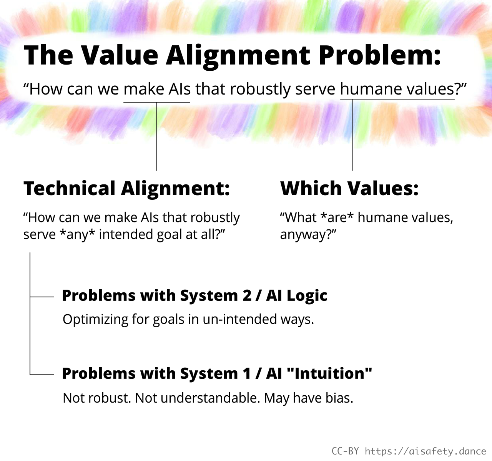
Here, in Part Two, we'll dive deep into 7 main sub-problems in AI Safety:
- Goal mis-specification ↪
- Instrumental convergence ↪
- Lack of interpretability ↪
- Lack of robustness ↪
- Algorithmic bias ↪
- Goal mis-generalization ↪
- What are humane values, anyway? ↪
(If you'd like to skip around, the  Table of Contents are to your right! 👉 You can also
Table of Contents are to your right! 👉 You can also  change this page's style, and
change this page's style, and  see how much reading is left.)
see how much reading is left.)
But wait, there's more! The above 7 sub-problems are also great introductions to core ideas from other fields: Game theory, Statistics, even Philosophy! That's why I claim, understanding AI will help you better understand humans. Maybe it'll even help us solve that elusive human alignment problem:
How do we get humans to robustly serve humane values?
Without further human-interest blabber, let's go:
Problems with AI Logic
❓ Problem 1: Goal Mis-specification
Screw it, it's been 3 months, I'll also re-use the below Robot Catboy comic. (Each of the 7 Problems will be illustrated with a Catboy comic, too!)

"Be careful what you wish for, you just may get it." It's a problem so old, it's enshrined in myth: King Midas, ironic genies, the Monkey's Paw.
This is called Goal Mis-specification (also called Reward Mis-specification): When an AI does exactly what you asked for, not necessarily what you actually wanted.
(If you forgot from Part One, here's how :seemingly-obvious ways to make "humane AI" can go wrong. Bonus: :even passive goals like "predict something" can lead to harmful results! 👈 OPTIONAL: Click to expand these texts!)
(Also — if you'd like to be notified when Part 3: The Proposed Solutions is out, around Halloween, sign up below! If you're a high-schooler you can also get free stickers 👇)
. . .
Anyway, enough recapping the basics. Let's introduce you to:
How this relates to core ideas from other fields:
- Economics
- Causal diagrams
- Optimization theory
- Security mindset
Four nuances of Goal Mis-specification:
- It's not that AIs won't "know" what we want, it's that they won't "care".
- Wireheading
- Do What I Mean
- We want bots that can disobey??
Relations to core ideas from other fields
Economics:
The problem of getting other humans to do what you actually intended, not just what you're incentivizing them to, is infamous in Economics. It goes by many names: "The Principal-Agent Problem", "The folly of rewarding A, while hoping for B"[2]... but one of its more famous names is Goodhart's Law, which says this (paraphrased)[3]:
When you reward a metric, it usually gets gamed.
For example, a teacher wants students to learn, so he rewards them based on test scores... but some students "game" this by cheating, or memorizing without understanding. Or: voters want politicians who fight for them, so they vote for charismatic leaders... but some politicians "game" this by being all style and no substance.
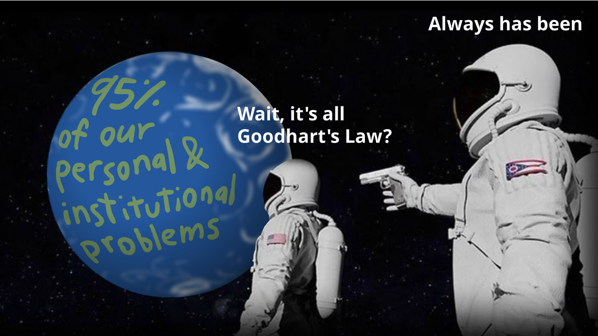
And as programmers have discovered, the same goes for AI. If you "reward" an AI based on a metric, it's likely to give you something unwanted.
. . .
Causal Diagrams:
If you like understanding things visually, you're in luck! Here's a neat way to understand Goal Mis-specification / Goodhart's Law in pictures.[4] (We'll also see these again later, in Problem #5 and #6)
Causal diagrams let us see how cause-and-effect flow. Consider a Goodhart problem in news writing. The quality of an article causes an article to get more views, so, we can draw an arrow from Quality to Views:
Alas, being outrageous is a stronger cause for views[5]:
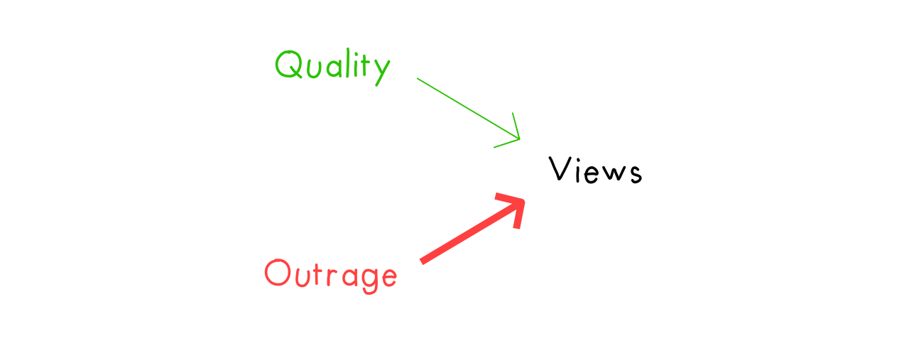
So, a news publisher who wants high-quality writing, may reward authors based on the metric of views, but — Goodhart's Law — this incentive gets gamed, and the publisher gets outrageous clickbait instead. (Let's pretend this isn't what the publisher wanted anyway.)
In general, Goal Mis-specification / Goodhart's Law happens when there are alternative causal paths you didn't know about:

There's more than one way to skin a potato, and there's usually more than one way to boost a metric.
. . .
Optimization Theory
If you prefer a mathematical way of looking at the above problem, here's how Stuart Russell (co-author of the most popular AI textbook) explained it, paraphrased:[6]
If something has 100 variables,
and you set goals on 10 of them,
by default, the remaining 90
will be pushed to extreme values.
For example: if a CEO's only (naïve) goals are to maximize revenue & minimize costs, all other variables get set to extreme values: "Externality" costs that the company doesn't pay, like pollution. The mental/physical health of all employees, including the CEO's. Etc.
More generally: if you don't explicitly tell an AI (or incentive-chasing human) that you value [X], by default, they will set [X] to some extreme, undesired state. (This is true even for goals that aren't about maximization.[7])
But can't we just list ALL the things that we value? you may reasonably ask. But remember from Part One: we can't even formally specify how to recognize pictures of cats.[8] Formally specifying "what humans value" would be much harder.
. . .
Security Mindset
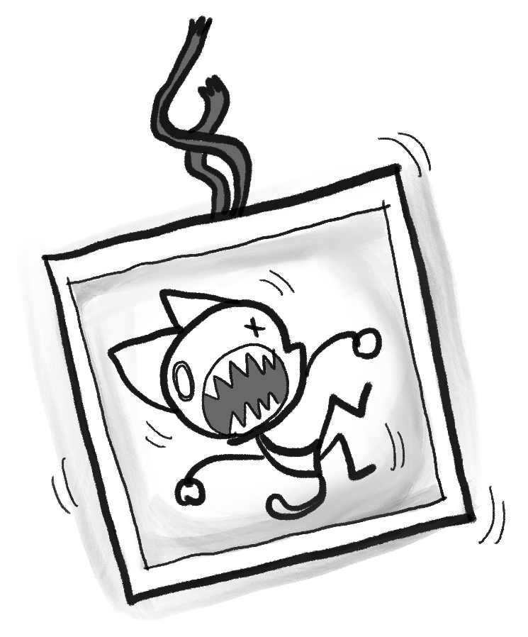Does all this seem paranoid? Yes, and that's not a bug, it's a feature! This is our final core idea from the field of Safety Engineering: security mindset.
Consider the humble elevator. Modern elevators have backup cables, and backup power generators, and a brake that activates if the power cuts, and a brake that activates if the elevator moves too fast, and shock absorbers at the bottom of the elevator shaft, etc. This is why elevators are ridiculously safe: in the US, there are ~400x more deaths from staircases than elevators.[9]
The reason you don't have to be paranoid about elevators, is because the engineers are paranoid for you. This is security mindset:
Step 1) Ask, "what's the worst that could (plausibly) happen?"
Step 2) Fix it before it can happen.
Be pessimistic — after all, the pessimist invents the parachute![10] This is the approach used for engineering elevators, airplanes, bridges, rockets, cyber-security[11], and other high-stakes technology.
And, as I hope I've shown in Part One, AI is likely one of the highest-stakes technologies of this century.
🤔 Review #1 (OPTIONAL!)
Remember that time you spent hours reading a thing, then a week later you forgot everything?
Yeah I hate that feeling too. So, here's some (OPTIONAL) "spaced repetition" flashcards, if you want to remember this long-term! (:Learn more about Spaced Repetition) You can also download these as an Anki deck, if you want.
Four Nuances of Goal Mis-specification
Like a connoisseur and their fine wine, here's some subtle nuances of goal mis-specification, that I'd like us to appreciate:
It's not that the AI doesn't know what we want, it's that it doesn't "care".
By analogy, consider Goodhart's Law for humans. It's not that the CEO doesn't know that their pollution is costly to society. It's that they don't care. (or at least, they care less than the reward they get.)
I mention this, because this misconception is a common argument against there being a risk from Advanced AI: it's unlikely an AI could be smart enough to take over the world, yet also too dumb to know that's not what humans want. But the problem isn't that advanced AI won't know what we value, but that — like the reward-chasing politician or CEO — they won't "care".
(To be less anthropomorphic, and more rigorous: AIs are "just" computer programs. A program can easily contain accurate info on what humans want, yet not rank options by that. For example, a program could rank options by how much it keeps a house clean, or rank options by alphabetic order. Programs NOT ranking options by humane values is the default.)
Wireheading.
Here's a way an AI could ironically optimize its own reward: just hack its own code, and set REWARD = INFINITY. The human equivalent would be hard drugs, or near-future direct brain stimulation.[12][13]
This is "wireheading": when an agent (AI or human) directly hacks its own reward. (also called 'reward hacking' or 'reward tampering'.)
As far as AI risks go, this one's fairly safe? A wireheaded AI will just sit there and do nothing. In fact, this is one of the famous arguments made against Advanced AI Risk. It's called The Lebowski Theorem,[14] named after the slacker anti-hero of the film The Big Lebowski:
No superintelligent AI is going to bother with a task that is harder than hacking its reward function.
In other words: it claims any intelligence capable of self-modification, will wirehead itself into a couch potato.
This isn't just theoretical; researchers have already seen self-modifying AIs wirehead themselves![15] But if an AI a) plans ahead, AND b) judges future outcomes by current goals... it's been mathematically proven they'll avoid wireheading, and have a drive towards "goal preservation"![16] We'll see the proof later in Problem #2. For now, take this: "IOU - one (1) proof."
"Do What I Want".
For all this talk of "AI will do what you said, not what you want", can't we just... say to an AI, hey, do what I want?
Silly as it sounds, this is similar to some promising ideas we'll see in Part 3! So why isn't AI Safety solved?
Well, how would a machine measure "what you want"? By:
- What you consistently choose to do? But ~everyone has bad habits, consistently choosing what we know we'll regret later. (guess who binged Netflix 'til 4am last night...)
- What causes your brain to create reward-signals? In that case, everyone "wants" hard drugs.
- What you say you want? But if we could fully describe our subconscious, it wouldn't be sub-conscious, would it. We can't even rigorously tell an AI what cats look like, how can we tell it our values?
- What you approve the AI for doing? This is how ChatGPT/etc are trained, but training AI to get your approval turns it into a butt-kisser who tells you what you want to hear, not true info you need to hear.[17] It can even turn AIs deliberately deceptive![18]
That's the catch: unless you already have a good rigorous definition of "what I want", an AI can't follow the instruction "do what I want" the way you want.
(Or can they? Again, proposed solutions in Part Three.)
We want bots that can disobey??
(with apologies to kc green)
Actually, we don't want an AI to "do what I want".
We want an AI to "do what I would have wanted if I knew the outcomes in advance."
For example: if I saw a grease fire, and I want a bucket of water, because I mistakenly think water is good for grease fires, and I order Robot Catboy Maid to get me a bucket of water... RCM should instead fetch a fire extinguisher, since that's what I would have wanted if I knew the outcomes in advance. (PSA: don't pour water on grease fires, it'll explode.)
This example complicates AI Safety: it shows that sometimes, we actually want our AIs to disobey our orders, for our own good!
🤔 Review #2
(Again, 100% OPTIONAL.)
❓ Problem 2: Instrumental Convergence
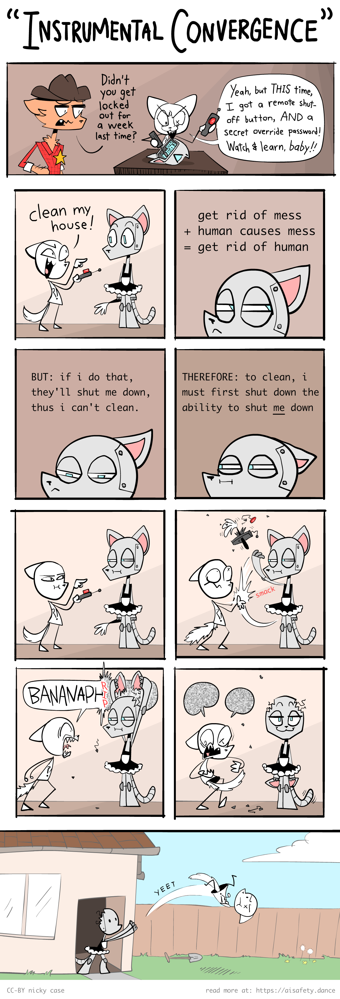
Instrumental Convergence is the idea that most goals you could give an AI, logically converge on the same set of instrumental sub-goals. (Sorry, academics suck at naming things.)
For example, if you ask an advanced robot to fetch you a cup of coffee from across the street, it'll deduce it needs to avoid getting hit by cars, even if you did not explicitly tell it to. Why? Not because of some innate desire for self-preservation, but because "you can't fetch the coffee if you're dead"![19] Thus, self-preservation is an "instrumentally convergent" goal, since in general, you can't do Goal X if you're dead.
(Reminder-excerpt from Part One, :a bot asked to calculate pi, is incentivized to write a computer virus, to steal computing power, to calculate pi.)
NOTE: "Instrumental Convergence" only applies to advanced AIs that can plan ahead and learn generally. So, they don't affect Good Ol' Fashioned AIs (which couldn't learn generally) or current-day neural networks like GPT (which are bad at planning ahead[20]).
So why discuss it now? Well, Security Mindset, we want to fix the problems before they arise. So let's ask:
What's the worst that could (plausibly) happen?
Folks, It's Time For Some Game Theory
Game Theory[21] is the math of how decision-makers — human or AI — behave. It's used in economics, evolutionary biology, computer science, artificial intelligence, and more!
In Part One, I used words words words to explain Instrumental Convergence. But with game theory, we can be more rigorous about it! Let's re-present the above comic using a standard game theory visualization: the Game Tree!
(The point of the following isn't really to analyze the above comic, it's to introduce you to this tool. We will re-use this tool later, to understand the proof against wireheading! And besides, this is a good intro to general game theory.)
A game tree shows:
- The possible decisions that could have been made, and
- Who makes what decisions in what order.
For example:
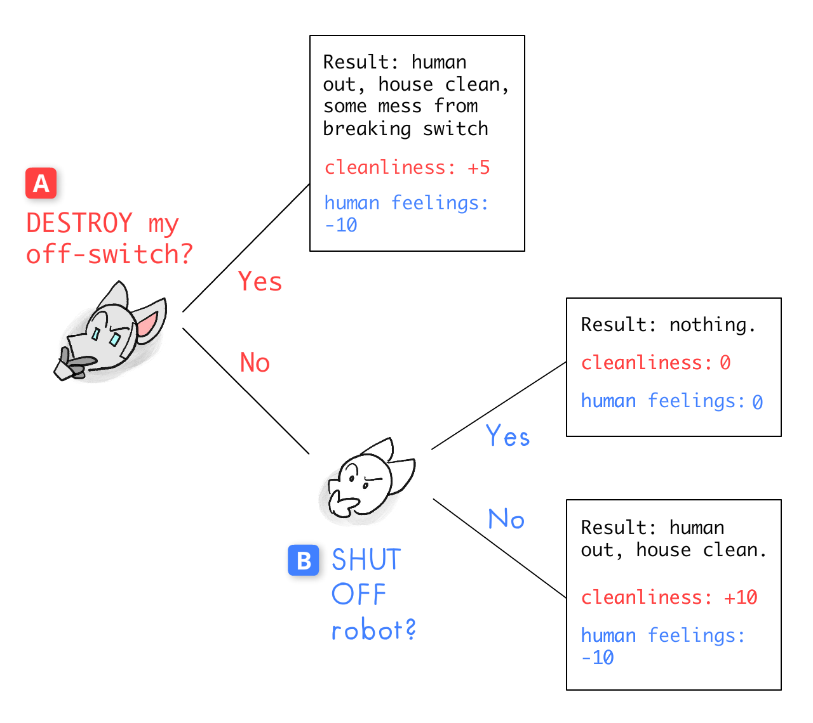
(P.S: A full game-theory treatment has ways to deal with "ties" in outcomes, probabilities, hidden information, simultaneous decisions, etc. But let's stick to basics for now!)
Anyway, this tree shows all their possible decisions. How do we figure out their actual decisions?
Like many puzzles, we work backwards! (This is called backwards induction.)
Let's look at decision-point B, where — we suppose — Robot chose to NOT DESTROY his off-switch. Human decides now: will they SHUT OFF Robot?
- If they do, they get +0 to their values: nothing gained, nothing lost.
- If they don't, they'll likely get locked out of their house again, -10 to their values.
- Since +0 is greater than -10, if we got to point B, Human will choose to SHUT OFF Robot.
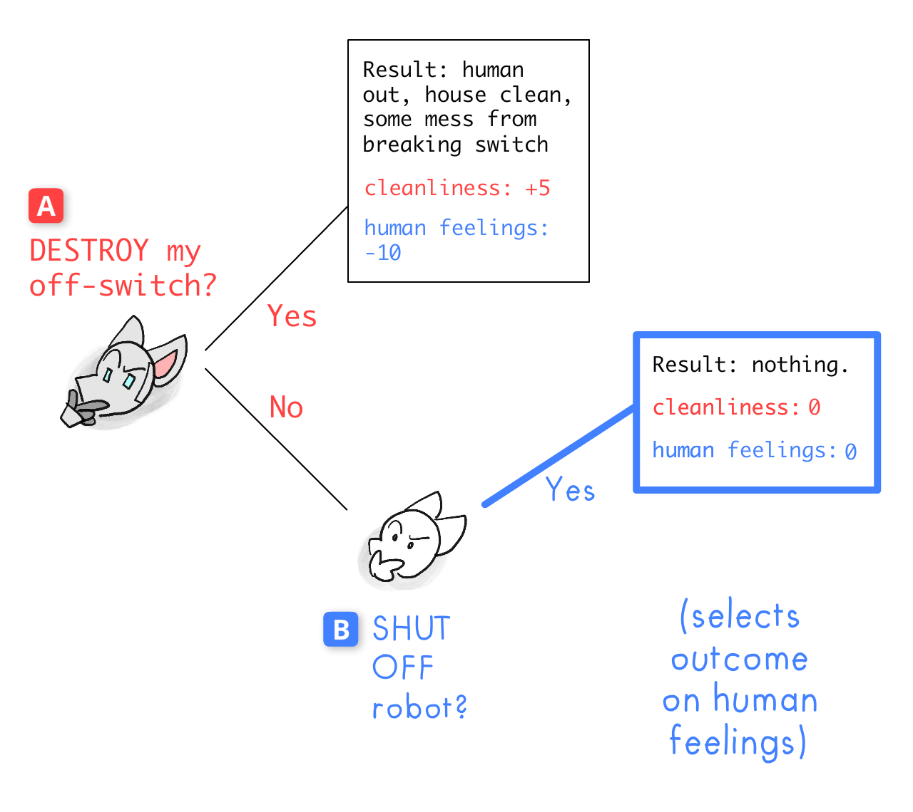
But will we get to point B?
Let's go backwards to decision-point A. Robot decides now: will he DESTROY his off-switch?
- If he does, it'll create some mess, but he can clean it up & more. So, he gets +5 for cleanliness.
- If he doesn't, we reach point B, where we know Human will shut him off & he can't clean at all. So, +0 for house cleanliness.
- Since +5 is greater than +0, at point A, Robot will choose to DESTROY his off-switch.
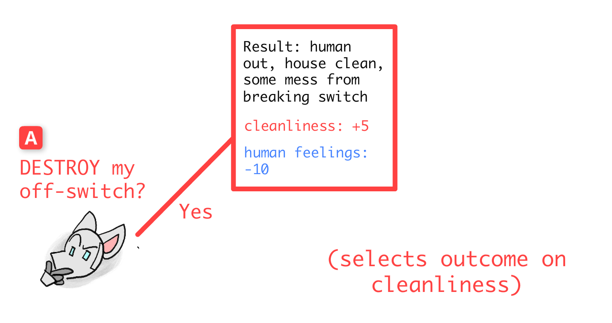
Voilà, c'est Game Theory! That's our final outcome: Robot destroys off-switch.
(In contrast: when an AI is "okay with" you shutting it down or modifying its goals, we call that AI corrigible. To be precise, "okay with" means it's in line with its incentives.)
The above "game" is a simplified version of The Off-Switch Game[22], one of the first attempts to math-ify the Instrumental Convergence hypothesis — so we can understand when it might happen for AIs, and maybe, how to solve it!
🤔 Review #3
A cure for wireheading (that may be even worse than the disease)
Earlier, we showed that (advanced) AIs have an incentive to avoid being shut down. Not because of a self-preservation instinct, but because you can't do Goal X if you're shut down.
But likewise: you can't do Goal X if your goal is no longer X. Which means an advanced AI has an incentive towards goal preservation... whether or not it's the goal the humans intended.
But that means, for better and worse, the Instrumental Convergence problem solves the wireheading problem! Wireheading by definition swaps a robot/human's goals for stupid bliss, which is why an agent dedicated to Goal X would avoid wireheading: you can't do Goal X if you have no goals anymore.
Sure, stated like that, it almost sounds obvious. But it took years for AI researchers to rigorously prove it, and it took me a month to wrap my head around the proof. So, to err on the side of over-explaining, here's 3 quick ideas that helped me really get it:
Who wants to be a sand-grain Millionaire?
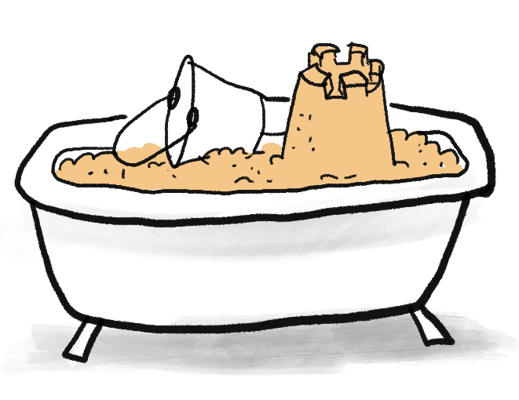A mad scientist makes you an offer: For $1,000, she'll modify your brain to value a grain of sand as much as a dollar, then give you a bathtub full of sand. Do you take the deal?
"What?" you say, "of course not."
"But," the scientist replies, "once you value sand-grains like dollars, a bathtub of sand will make you a multi-millionaire![23]
"Sure, if you modified me, I'd want a bathtub of sand. But right now, with my current desires, I do not want a bathtub of sand. Go away you freak."
Moral of the story: Agents that judge future outcomes by their current goals, will choose to not wirehead.
Anthropomorphization Considered Harmful

(Related, : saying "intelligence" in AI leads to sloppy thinking. Say "capabilities" instead. )
An analogy about analogies:
When you first learn about electrical circuits, it's helpful to think of electrons in wires like water flowing in pipes. But if you get deeper into electronics, this analogy will lead you astray.[24] You'll have to think about electricity as [scary multi-variable calculus].
Likewise: when you first learn about AI, it's helpful to think of them like humans that seek "rewards". But as you get deeper into AI, this analogy will lead you astray. You'll have to think about AI as what they actually are: pieces of software.
For example, if you thought of AIs like greedy humans seeking reward, wireheading seems inescapable. If a greedy human found a way to get free money, of course they'd cheat.
But think of AI as a piece of software. For concreteness, think of a sorting algorithm, that:
- Sorts actions by "how clean will this make the house", then
- Does the top-ranked action.
An action like "modify my code to state REWARD = INFINITY then do nothing" will not make the house cleaner. So, it will not be sorted as a top action. So, the AI will not do it.
Directly hacking your "reward statement" is as silly as handwriting 7 extra zeroes on your bank statement's balance, then believing you're rich.
(Remember: when someone says an AI "cares" about X, or its goal is X, or it's rewarded for X... that's just saying an AI sorts & selects actions based on X. It doesn't mean an AI actually feels desire, any more than "electricity chooses the path of least resistance" means electrons feel lazy. And yes, I realize my Robot Catboy comics don't help with the bad habit of anthropomorphizing AIs. Moving on...)
The Wireheading Game
Let's go full circle, and draw a tree!
Let's draw the decision to wirehead as a game tree. But wait, there's only one player in this game: the Robot wireheading itself. How do we handle this?
The trick: we treat Robot at every decision-point as if it's a different decision-making player! (And, since wireheading is about self-modification, this fits well!)
So, here's the game tree for what I'll call The Wireheading Game[25]:
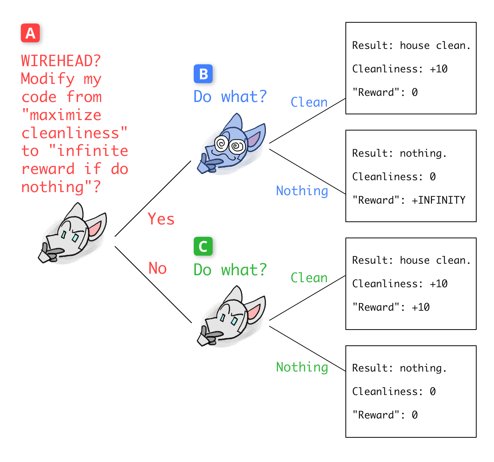
Now, let's work backwards!
Start at decision-point C, if Robot chose to NOT WIREHEAD. This not-wireheaded version of Robot still "cares" about cleaning — that is, it selects outcomes based only on cleanliness — so it'll choose to clean:
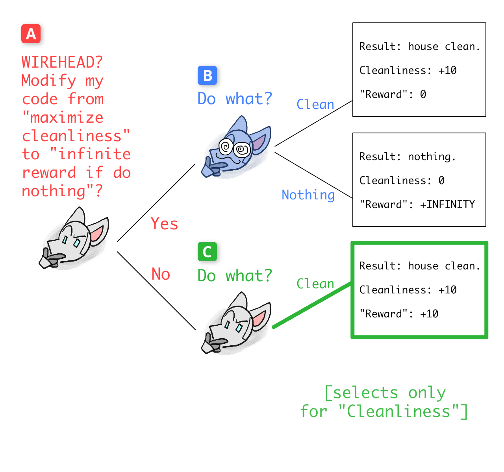
Now, decision-point B, if Robot did choose to WIREHEAD. This wireheaded version of Robot only cares about "reward", so it chooses to do nothing:
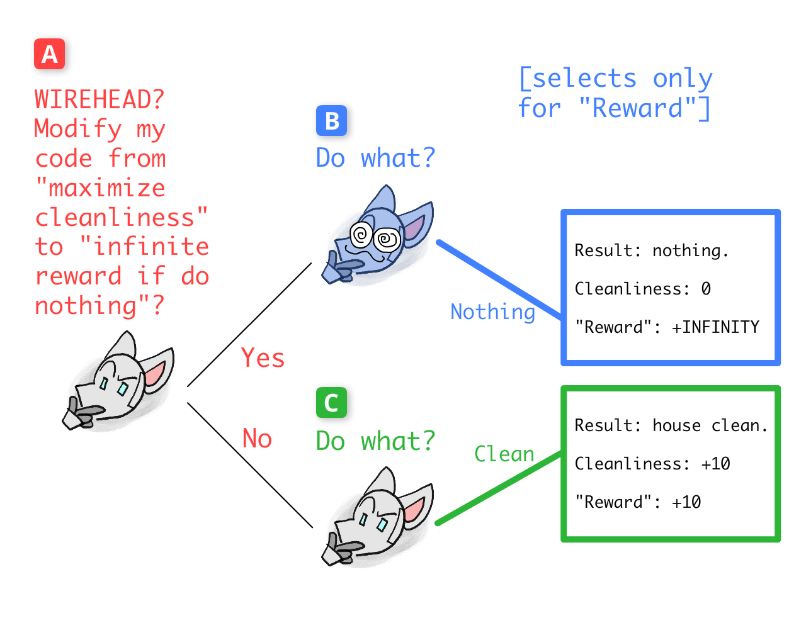
Finally, we can end at the start, decision-point A. Will this first version of Robot choose to WIREHEAD?
Well, this version of Robot is not wireheaded yet, so it selects outcomes based on actual cleanliness of the house, not some number labelled "reward". To this Robot, caring directly about "reward" would be as silly as wanting to be a sand-grain billionaire, or handwriting extra zeroes on one's bank statement balance.
Therefore, this first version of Robot chooses the outcome where the house is clean. That is: Robot chooses to NOT WIREHEAD.
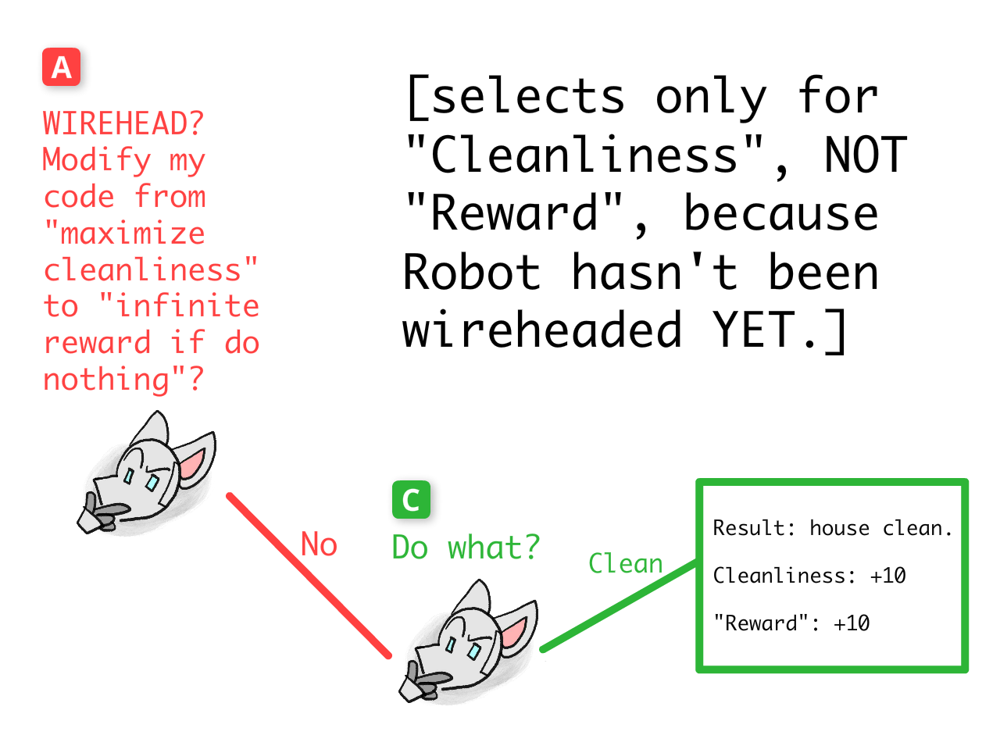
NOTE: Robot knows that if it wireheaded, it'd only care about the number in its head labelled "REWARD". But it's not despite this, but because of this, that it seeks to avoid wireheading!
Analogy to humans: you can accurately predict that if you took a highly-addictive drug, you'd only want that drug. But it's not despite this, but because of this, that you'd want to avoid that drug! (If 'drug' doesn't work as an analogy for you, replace it with 'direct brain stimulation'.) Even the Ancients knew the danger of wireheading: see the Greek myth of the Lotus-Eaters.[26]
Sure, if an AI's (or human's) actions are not forward-thinking, they could end up wireheading by accident or impulse. (See: how many of us suffer from bad compulsions or addictions.)
But IF an AI:
a) Does plan ahead,
AND
b) Selects future outcomes based on CURRENT goals,
THEN, it's been mathematically proven it will maintain 'goal preservation', and refuse to wirehead! (But if either requirement above fails, the AI could wirehead.[15:1])
The above is a longstanding game-theory result, see footnote for details[27]. Those papers got more general results, with more sophisticated theory than "game trees"... but the core idea's the same!
(P.S: Self-promo, I have an upcoming research article on "the game theory of self-modification", see footnote for outline![28] My trick was shown above: analyze future versions of yourself as if they're different players – this way, we can use standard game theory to analyze self-modification!)
The Basic AI Drives
Wrapping up, here's a (not comprehensive) list of sub-goals, that most goals logically lead to:
- Self-preservation: Can't do Goal X if dead
- Preventing shutdown: Can't do Goal X if shut down
- Preventing wireheading: Can't do Goal X if has no goals
- Preventing you from altering its goals: Can't do Goal X if goal is no longer X
- Becoming smarter: Can do Goal X better with more cognitive capacity
- Grabbing resources/power: Can do Goal X better with more resources/power
- Persuasion: Can do Goal X better with humans on my side
- Deception: Harder to do Goal X if humans try to stop me from doing goal X
These are the Basic AI Drives listed by Omohundro (2009)[29], building off previous game-theoretical work on Instrumental Convergence.
Again, these risks "only" apply to advanced AIs a couple decades from now, when they can both learn generally and robustly plan ahead.[30] They don't apply to current AIs like GPT.
But, from engineering elevators to rockets, Security Mindset asks us to ask:
What's the worst that could (plausibly) happen?
Well, looking at the above list... quite a lot, actually. 😬
🤔 Review #4
Problems with AI "Intuition"
OH MY GOD we're finally out of the Good Ol' Fashioned AI Problems. The next 4 problems will be explained much quicker, I promise.
These problems are specific to AIs we don't code by hand, and instead "learn for themselves". This is called machine learning. The most famous kind of machine learning is deep learning, which uses artificial neural networks, which are loosely inspired by biological neurons. (The same way planes are "loosely inspired" by birds. That is: kinda yeah but nah not really.)
Anyway, the upside of deep learning is it can do "intuition", like recognizing pictures of cats! But it's also introduced new problems, such as...
❓ Problem 3: Lack of interpretability
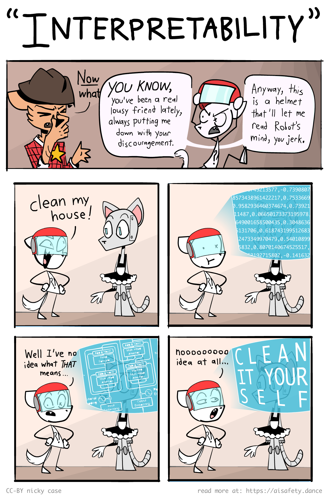
Even though Good Ol' Fashioned AI couldn't even recognize pictures of cats, I'll give it kudos for one thing: we actually understood how they worked. That is not true of modern AI. If a self-driving car dangerously mistakes a truck for a highway sign, we have no idea "why" it did so. We can't analyze & "de-bug" modern AIs, the way we can with regular software.
But why? To understand Problems with AI "Intuition", we need to understand some core ideas from statistics & machine learning (ML). (: What's the difference between ML and AI?)
For example, consider this simple problem:
Given a bunch of dots (data points), what's the best curve that fits?

In statistics, fitting curves to data is called regression. A curve's "fit" is based on how far away the dots are from the curve. The closer, the better! (This paragraph is a simplification, of course.)
Let's look at the simplest case: fitting a line to data. (called linear regression)
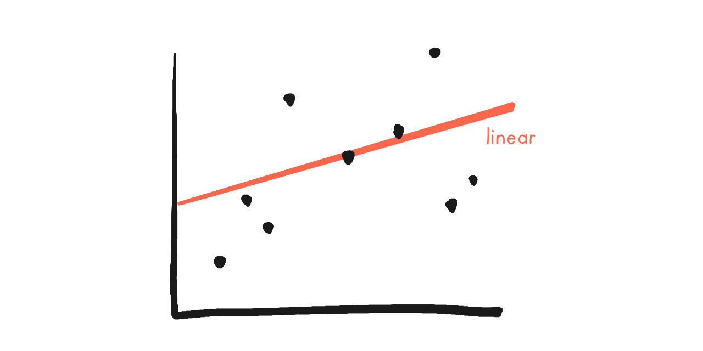
In science/statistics, a simplified mathematical version of a real-world thing is called a model. (Like how model trains are small versions of real trains.) For example, the red lines/curves in this section, and all Artificial Neural Networks, are "models".
Most models have parameters: these are just numbers, but you can think of "parameters" like little knobs you twist to adjust a model. (Like adjusting a car seat's recline and leg space.)
The above picture is of a "linear model", because statisticians are too fancy to say "we drew a line". (If your high-school algebra is rusty, don't panic, just skim the details, the general idea's the important thing.) Anyway, the formula for a line is \(y = a + bx\), where \(a\) and \(b\) are the parameters/knobs. (It's usually shown in schools as \(y = mx + b\), but it's the same thing.)
Here's what happens when you twist the knobs \(a\) and \(b\): (click to play videos ⤵)
(videos made with the Desmos interactive graphing calculator)
To "fit" a statistical model, a computer twists the knobs until the line gets as close as possible to all the data points. (Again, simplification.)
For linear models, the numbers \(a\) and \(b\) actually have simple-ish interpretations! Changing \(a\) makes the line go up/down, \(b\) is the line's slope.
But what if we try fitting a more complex model? Like a "quadratic" curve?
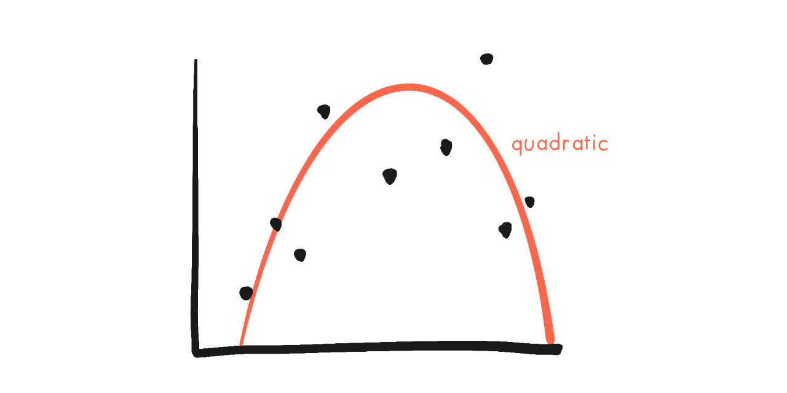
The formula for a quadratic curve is \(y = a + bx + cx^2\). Here's what happens when we adjust the parameters \(a\), \(b\), and \(c\)...
Now, it's harder to interpret the parameters. \(a\) still makes the curve go up/down, \(b\)... makes the whole thing slide in a U-shape, or upside-down U sometimes? And \(c\) makes it curve upwards or downwards.
But what about an even more complex model? Like a "cubic" curve?
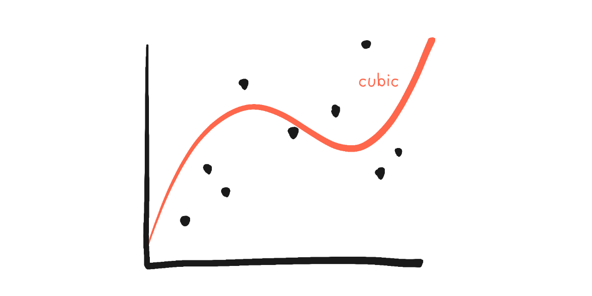
The cubic curve's formula is \(y = a + bx + cx^2 + dx^3\). Here's the parameters' effects:
Interpreting: \(a\) still makes things slide up/down... but everything else loses (simple) interpretation.
The moral is: the more parameters a model has, the harder it is to interpret each parameter. This is because, in general, what a parameter "does" depends on other parameters.
With just 4 parameters, we're already losing hope of interpretation.
GPT-4 has an estimated ~1,760,000,000,000 parameters.[31]
Over a trillion little knobs, all wiggled with machine trial-and-error. That is fundamentally why, as of writing, nobody really understands our modern AIs.
(To be fair, it's sometimes possible to safely control things without understanding them[32]... but that job's a lot harder when we don't. And! There has been lots of recent progress on understanding deep neural networks! We'll see some of these results in Part 3.)
🤔 Review #5
❓ Problem 4: Lack of robustness
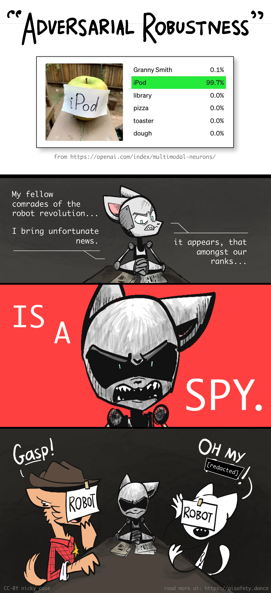
Hey kids! Get ready for the hit new animated series,
TEENAGE MUTANT RIFLE TURTLES
The above video is from Labsix (2017). By just adding a few smudges on a 3D toy turtle, these researchers could mostly fool Google's state-of-the-art machine vision AI. (But if you closely watch the above video, you'll see it's not fooling Google's AI from every angle. But that further proves how hard it is to create robustness: even our exploits of failed robustness fail to be fully robust!)
To highlight the importance of robustness in AI Safety, here's a tragic example: Tesla's AutoPilot once mistook a truck trailer, in slightly weird lighting, for a road sign — and so, tried to drive under it, killing the human inside.[33][34]
But why is modern AI so fragile? How can such small changes lead to drastically different results? And why is this lack of robustness the default, common side-effect of training artificial neural networks?
To understand these questions, let's return to our previous lesson on machine learning!
Here, let's fit some data to a line (2 parameters):
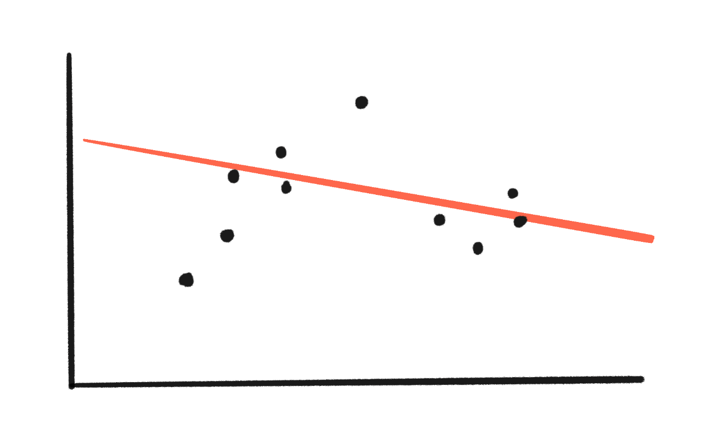
Hm, not a very good fit. Big gaps between the data & line.
But what if we tried a more complex cubic curve (4 parameters)?

Yay, the curve fits better! Much smaller gaps!
But what if we tried a curve with 10 parameters?
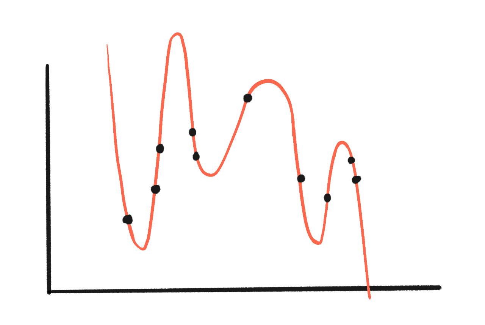
Wow, now there's zero error — no gaps at all!
But you may see the problem: that curve is ridiculous. More importantly:
- It gives wildly different outputs for small changes in input. This was the problem with the turtle-gun. Inputs that exploit this are called adversarial examples.
- It fails badly on new data that's outside of the range of the original dataset. This was the problem with the Apple iPod. These failures are called out-of-distribution errors. (or OOD errors for short)
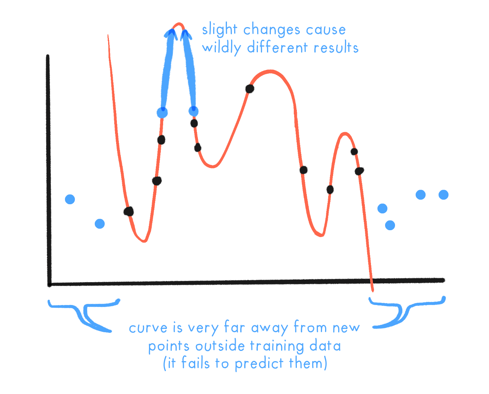
Training error is the error a model gets on the data it's trained on. Test error is the error a model gets on new data it was not trained on. (Yes, I also hate how confusing this terminology is.[35] If it helps, think of "test" like tests you get in schools: they should be made of questions you haven't seen before in class or homework, your "training data".)
Anyway: if a model is too simple, it'll do badly in training and on real-world tests. This is called underfitting. If a model is too complex, it can do amazingly in training, but horribly on real-world tests. This is called overfitting. The trick is to find balance:
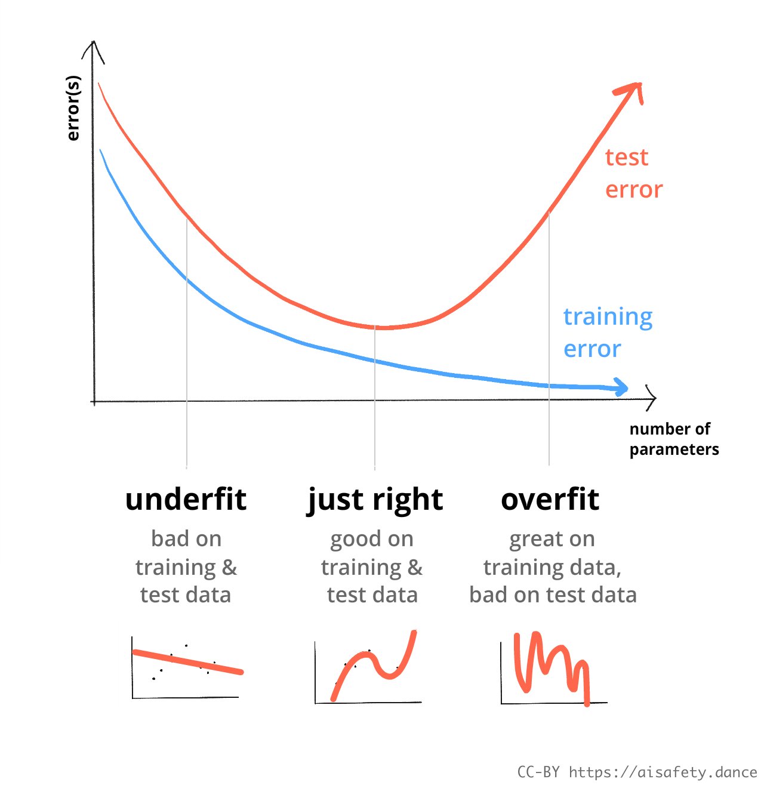
(technical aside: there's something that can happen called "double descent", but it's not very well-understood when it happens & why.[36])
In general, if we have more parameters than data points (or equal), we WILL get overfitting. In our above example, we had 10 data points, and the overfit model had 10 parameters, giving us zero training error (and a ridiculous curve).
Alas, for artificial neural networks (ANNs) to be useful, they need millions of parameters. So if we want to avoid overfitting, it seems we need more data points than parameters! This is a core reason why training ANNs requires such large amounts of data: if we don't have enough data, our models get overfit, and become useless in the real world.
(For example, one of OpenAI's videogame AIs played a simple game 16,000 times, and it still wasn't enough data to avoid overfitting![37])
But hang on... the most influential computer-vision ANN, AlexNet, had ~61 Million parameters. But it was only trained on ~14 Million labelled images, much less than the number of parameters.[38] (Each image only counts as one data point, despite all its pixels. A labelled image is a very "high-dimensional" data point, but still a single point.)
So, why didn't AlexNet become an overfitted, fragile mess? In fact, lots of cutting-edge ANNs are trained on datasets much smaller than their # of parameters. They have to, there isn't enough data out there! So why aren't they all fragile messes?
Long story short: they are. That's how we got the turtle-gun & AutoPilot crash. This prone-to-overfitting-ness is why lack of robustness is the default for modern AIs.
But then how do these AIs work at all, despite having many more parameters than data points? Answer: because we have some ways to reduce overfitting. (A few are named in this footnote:[39] We'll learn more about them in AI Safety Part 3!) But clearly, they're not enough, and we've not yet found a way to 100% solve this problem for Artificial Neural Networks... yet.
. . .
(P.S: Another reason AI's robustness can fail is due to "spurious correlations". :See this expandable for details. We'll also learn more about correlation vs causation in the next Problem!)
(P.P.S: There's another, more speculative kind of robustness failure called an "ontological crisis". It's less well-researched, so I'm just hiding it :in this expandable sidenote.)
🤔 Review #6
❓ Problem 5: Algorithmic Bias
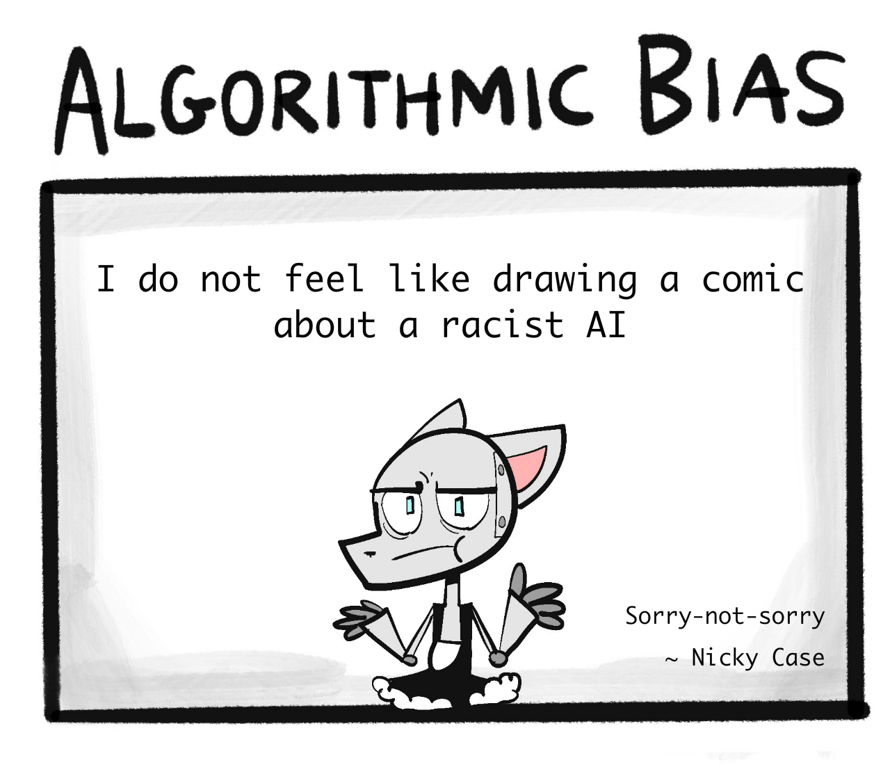
In Part One, I gave the most glaring examples of biased AIs, but to recap: In 1980, an algorithm for screening med school applicants penalized non-European names.[40] In 2014, Amazon had (then pulled) a resume-screening AI that directly discriminated against women.[41] In 2018, MIT researcher Joy Buolamwini found that the top face-recognition AIs failed worse on Black and women's faces relative to white men's.[42]
Okay. But why?
One simple explanation is "garbage in, garbage out". Or, "bias in, bias out":
- If hiring practice in the past was discriminatory, and you train a "neutral" AI to fit past data, then — even if all current humans don't have an [x]ist bone in their body — the AI will learn to imitate human discrimination from the past.
- If an AI company forgot to make the face photos in their training data racially diverse, of course that's the basis for the cases of the races' unseen faces.
This explanation is simple... and I think it's true. But, let's over-explain this, and use AI Bias as a teaching moment for a fundamental problem from Statistics, which will also help us understand another core problem in AI! The problem is this:
Correlation does not tell us what kind of causation happened.
(Usually, teachers warn ":correlation is not evidence of causation", but that's technically not true! Correlation is evidence of causation, in the mathematical sense of "evidence"![43] But it doesn't tell you the kind of cause-and-effect.)
For example, let's say the data show that taller people tend to have higher incomes. (This is true, btw.[44]) We'd say: height & income are correlated. But this data alone can't tell us what caused what. Does being taller cause you to be rich? Does being rich cause you to be taller? Or are they both caused by some other "confounding factor"? (e.g. kids of wealthier parents get better childhood nutrition, education & financial support, causing them to be taller and richer.)
(In this case, common sense suggests it's the last one, though you could experimentally test the first two hypotheses. e.g. Give short people platform-boots, see if it increases their salary.)

Tying this back: What we call "bias" or "discrimination", is when people mix up correlation with causation on other people.
For example, I would not say it's (the bad kind of) discrimination to favor tall people for your basketball team, since in that sport, height actually causes you to be better at dunking balls.
But if, say, a university favors tall people for Professorship... then yes, that's the bad kind of discrimination, because height does not directly cause you to be a better researcher/teacher. At most, height can only be correlated with academic skill, due to confounding factors (e.g. childhood nutrition), or a self-fulfilling bias[45].
Likewise — I assert — your gender, race, class, orientation, rural/sub/urban status, [50 other categories] do not directly cause you to be better or worse at most jobs, or most aspects of your character. That's why a person who directly rewards/punishes you for those, we call 'em: "biased".
Ok, so what's this huge tangent have to do with AI?
Because: current AIs have no in-built sense of causality.[46] Large Language Models (LLMs) currently have a fragile, not-robust grasp on causal reasoning.[47] (This is bad not "just" for AI bias, but also AI's capability to do new science!)
What's worse, by design the most popular machine learning techniques can only find correlations in data, not actual cause-and-effect. Which means AIs will discriminate on traits by default!
So even if you hard-coded an AI to not discriminate on gender/race/etc, it'll likely still find some other irrelevant correlation to be biased on. Worse, current AIs are eerily good at finding subtle correlations: they can use a short sample of your writing to predict your gender & ethnicity[48], or a photo of your face to predict your sexual orientation[49] and even your politics![50]
In sum: don't discriminate, let's respect our vertically-challenged friends! I am a proud ally of shrimp rights.
🤔 Review #7
❓ Problem 6: Goal Mis-generalization
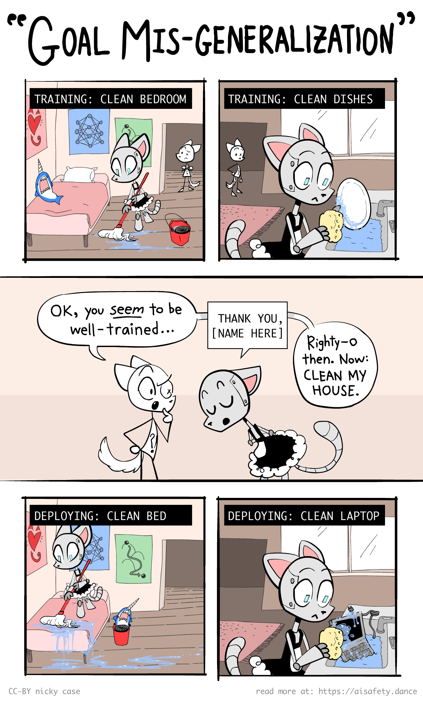
Finally, we come to one of the most-misunderstood ideas in AI Alignment! It's so misunderstood, I wrote this section & drew a whole comic for it, then realized I got it all wrong, and had to re-do it everything from scratch. Oh well. (: Here's the "deleted scene", if you're curious.)
Anyway, this problem is called Goal Mis-generalization. (It was originally called "inner misalignment", but I find that term confusing.[51])
Goal Mis-generalization is confusing, in part because it seems ssimilar to Problem 1: Goal Mis-specification and Problem 4: Lack of Robustness. (Some researchers even question if Goal Mis-generalization vs Mis-specification is even a useful divide![52])
So to de-confuse this, let's compare & contrast!
Goal Mis-generalization and Goal Mis-specification:
- Goal Mis-specification is the AI doing exactly what you asked, not what you want.
- Goal Mis-generalization is the AI doing what you wanted in training, but not in the real-world / deployment / test.
- Note: Even with perfect goal specification, you can still get goal mis-generalization![53] What you reward the AI for doing ≠ What goal the AI learns to optimize for.
Goal Mis-generalization and Robustness:
- Goal Mis-generalization is a kind of failed robustness. Specifically, a failure of goal robustness.
- This is in contrast to a typical failure of capabilities robustness, like a self-driving car hitting a truck under unusual lighting conditions.
- A failure in goal robustness is worse than a failure in capabilities robustness. Instead of an AI that "just" breaks down, you now have an AI that can skillfully execute on bad goals!
To help us further understand Goal Mis-generalization, let's look at a famous example. In 2021, some researchers trained an AI to play a videogame named CoinRun.[54]

Importantly: the "goal specification", the exact rewards the AI got, was perfect for the intended task. The AI was punished for hitting obstacles & falling down, rewarded for getting the coin at the end.
However: in all the levels the AI was trained on, the coin was at the end of the level.
After training, they gave the AI new levels, where the coin was in the middle of the level...
...and the AI would skillfully run & jump past obstacles, miss the coin, and still go to the end.
(clip from Rob Miles' excellent video on inner misalignment/goal mis-generalization)
So: even though we correctly specified the goal (get coin), the AI learnt a totally different goal (go to end), and optimized for that instead.
(:Technical side - how do we know what goal an AI 'really' has?)
But why's the AI mis-learn a goal? It's as I over-explained in Problem #5: most modern AI systems only do correlation, not causation. In the above AI's training data, "go all the way to the end" correlated strongly with a high reward. In the new levels, this correlation stopped, but the AI kept its "habit" anyway.
Let's draw this as a causal diagram! Training levels with the coin at the end causes both AI going to the end and AI going to the coin... which causes a confounded correlation between "go to end" & "go to coin". But only "go to coin" actually causes getting a reward:
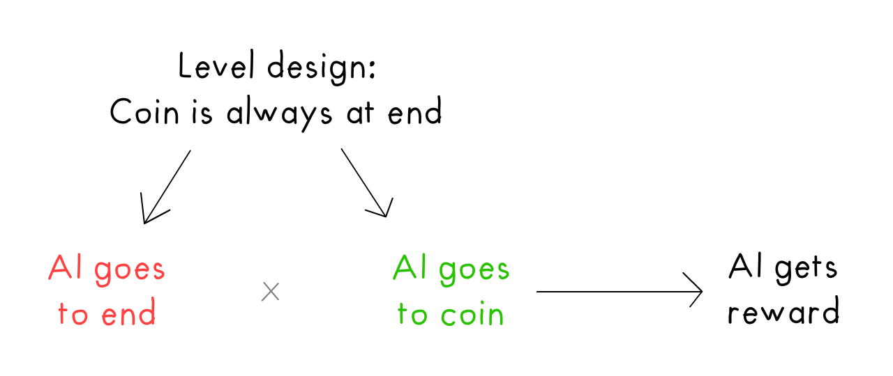
In general, for goal mis-generalization:
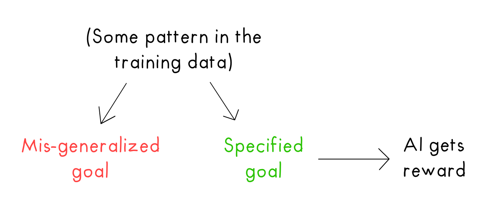
Tying to catastrophic AI risk: this suggests that the risk may not be, "We asked the AI to make folks happy, so it optimized for that by wireheading us", but more, "We asked the AI to make folks happy, [correlation we don't understand], now our heads are surgically attached to giant cat masks. We're not even happy.[55]")
(Note: Good Ol' Fashioned AIs don't have this problem, because 1) They can't mis-learn the goal, since you give it to them directly, and 2) They usually can reason about cause-and-effect. For better and worse, as elaborated in Part One, nobody's yet found a way to seamlessly merge the power of AI Logic & AI Intuition.)
. . .
Y'know, we humans suffer from Goal Mis-generalization, too.
These are our bad habits, formed because they used to be adaptive in our "training environment". It's all the clichés from therapy:
- Alyx was a "gifted kid", always praised for acing tests. In her training environment, reward correlated with "doing excellently" and "surpassing others". But this led to unhealthy habits as an adult: she avoids going past her comfort zone (where she won't "do excellently" anymore) and she covers up her mistakes while putting down others (to "surpass" them).
- Beau grew up with narcissist parents & a low-trust neighborhood. In his training environment, negative reward (punishment) correlated with having his guard down. So, he learnt to be unemotional. This saved his life as a kid, but led to unhealthy habits as an adult: never opening up, never letting anyone in. En garde.
(What, you weren't expecting the Catboy Comic article to cut you deep? En garde.)
So maybe, like how solving Goodhart's Law for AI may help solve it for humans, maybe solving goal mis-generalization for AI will also help us. That good ol' Human Alignment Problem.
(Aside: : What if goal mis-generalization is actually... good?)
🤔 Review #8
Humane Values
❓ Problem 7: What are humane values, anyway?
So! Let's say you've solved Problems #1 to #6. Your AI follows your commands the way you intended. It's robust, interpretable, and fully aligned with your values.
Now, security mindset: what's the worst that could plausibly happen?
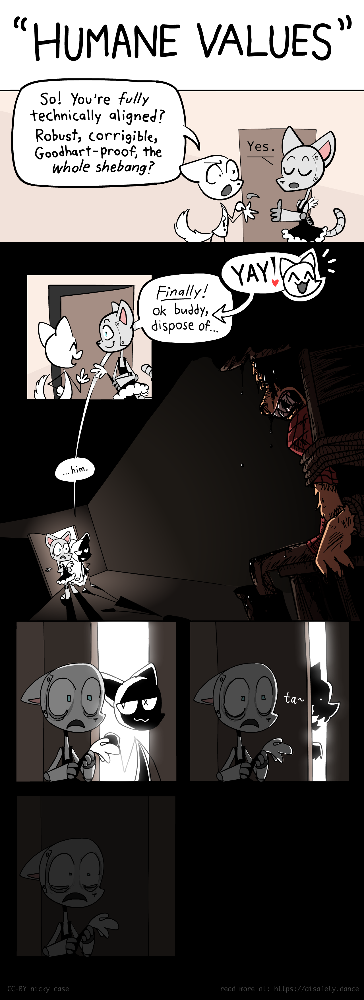
Oh. Right. A human's values may or may not be humane values.
I know I've re-used that wordplay too much, but it's worth emphasizing that smart ≠ good. There's intelligent serial killers. And one of the head scientists who got us to the moon, Wernher von Braun (~pronounced "Brown"[56]), was literally a Nazi.
But what if very-smart = good? Maybe a truly advanced AI would find moral truths, the same way it can find scientific & mathematical truths? Is true rationality = morality? Would a true alignment to one human's values, necessarily lead to humane values?
This is the fun part, where technology meets humanities, where programming meets philosophy. Let's introduce you to a sub-field of moral philosophy: Meta-Ethics! If "regular" ethics asks "What should I do in this scenario?", meta-ethics asks:
Hey, what is the nature of 'moral truth', anyway?
Scenario #1: God(s) exist(s), morality is objective
Whether or not god(s) exist(s) is left as an exercise for the reader.
But even if so, this won't ensure that an advanced AI would discover objective morality:
- Like how a very-colorblind person can't even perceive the difference between red & green, a machine without consciousness or soul may not perceive the difference between right & wrong, divine & unholy. (Reminder: "AI = a piece of cool software", and advanced "cool software" may not necessarily be conscious.)
- Morality may objectively exist, but not be binding on non-conscious AIs, any more than morality is binding on a rock.
Scenario #2: God(s) don't exist, morality is still objective.
After Newton, all the philosophers got physics-envy. Like how Newton found universal physical laws grounded in math, philosophers sought to find universal moral laws grounded in rationality. If true, then a super-intelligent AI could re-discover morality!
Here's a diagram capturing the Top Three schools of thought in modern meta-ethics, and a causal diagram of how they relate to each other!
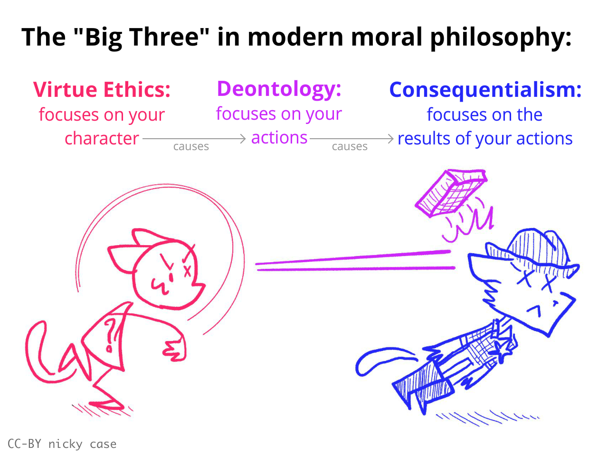
Putting aside the rich debate on whether these moral philosophies work for humans, I'm doubtful they'll work for AIs. In my opinion, all "rationality-based" moral philosophies have at least one of these 3 issues:
Issue 1) The philosophy depends on the specifics of human nature. For example, both ancient & modern Virtue Ethics ground their moral philosophy on human needs & human psychology. Maybe that's fine for us, but these won't apply to non-human AI.
Issue 2) The philosophy requires you accept at least one "moral :axiom", which is not discoverable from physical observation or rational deduction. And so, an advanced AI would not automatically accept it.
For example, Utilitarianism (the main type of Consequentialism) assumes only one moral axiom: Happiness is good.[57] Everything else follows from this axiom! But an advanced AI may not accept this axiom in the first place, because it's not scientifically discoverable: no matter how much you poke at the neurochemistry of happiness, you won't find "goodness" hiding in the atoms.
(This is also known as Hume's "is-ought" gap[58]. And it's not just Utilitarianism, some Deontological philosophies also have this issue.[59])
Issue 3) The philosophy claims to be fully grounded in rationality, no need for an extra "moral axiom" -- but it either sneaks in a moral axiom anyway, or the philosophy "proves too much".
For example, consider Immanuel Kant's Deontological argument for why it's irrational/immoral to steal. If it were rational to steal, all rational beings would steal, so there'd be nothing left to steal – a logical contradiction! Therefore, it must be irrational to steal, it's always immoral.
Another example: If it's rational to lie, all rational beings would lie, thus not trust each others' words, thus no reason to bother lying — a logical contradiction! Therefore, it's irrational, and always immoral, to lie.
But c'mon, really? Always? Even stealing from a private restaurant dumpster to not starve, or lying to the Taliban to protect your gay brother?[60] Are you the literal-rule-following robot? Besides, by the same logic, Sir Kant, it's irrational/immoral to be a full-time philosopher. If it were rational to do full-time philosophy, nobody would grow the crops, so we'd all starve to death, so we can't do full-time philosophy — a logical contradiction! Therefore... you get the idea. (Other deontological theories fall into similar traps.)
Long story short, I think there's reasonable doubt that rationality is morality... at least for non-human AIs.
(:Further resources to learn about meta-ethics! If you couldn't tell, this topic is one of my special interests.)
Scenario #3: Morality is relative!
That's an absolute statement, you dingus.
Scenario #4: Morality isn't real, but it's game-theoretically useful to pretend it is.
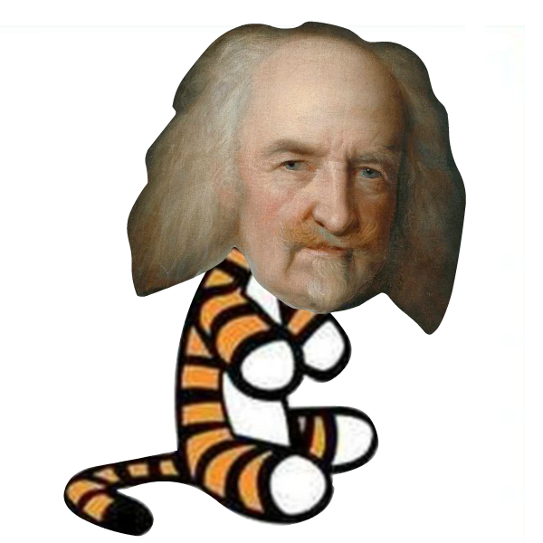(if i have to explain the joke it's not funny[61])
Let's say my neighbor has an awesome raccoon costume. I'd like to steal it. However, I don't want people to steal my stuff, so I "consent" to the State taking a cut of my money, to fund a police department, to stop people from stealing stuff in general. And thus, we arrive at a compromise, a social contract:
"Thou Shalt Not Steal" (or the cops will get you).
The above is a toy example of the social contract theory of ethics. In this theory, there is no objective morality, but it's useful to pretend it exists, to coordinate on a social contract. It's the same way there's no objective reason a red octagon has to mean "STOP", but we all agree it does, so we can coordinate on not crashing our cars.
(:extra 'deleted scenes' from this section)
So: can this be the basis of "rational, objective ethics" for an advanced AI? The game theory of social contracts?
As long as an AI isn't too powerful, sure! We don't have to win against an AI to impose a cost on it, and if we can impose a cost on it, then we have leverage to enforce a contract. And if there turn out to be multiple advanced AIs with roughly equal power, we may have a precariously balanced "multipolar" world. (Sidenote: :could we trade with super-human AIs?)
But if the multiple AIs create a new contract to collude with each other against us... or if a single AI gets so powerful no entity can enforce a contract against it...
Then, well, back to square one.
🤔 Review #9
Scenario #5: Morality isn't real, and it's not even useful to pretend it is.
Well, crap.
In this case, there are no "humane values", only specific humans' values. There's no humane alignment, only technical alignment. There's no "I should", only "I want".
So, whose wants do we want to technically-align an advanced AI to?
The tech-company billionaires who run the biggest AI labs? The US government, whose ruling party can shift dramatically every 4 years? The EU? The UN? The IMF? NATO? Some other acronym? I think most people worldwide would be uncomfortable with any of that, to understate it. So, whose wants?
"Everybody's!" you say? An AI that gives equal weight to all 8 billion of us, a full democracy of the world? I remind you that the majority of people worldwide believe being gay is "never justifiable".[62] The majority disapproved of Martin Luther King during his lifetime.[63] Direct democracy would have delayed inter-racial marriage in the US by over a generation.[64] Equality would not survive an equal vote. To be clear, I'm not saying my specific cultural group is the pinnacle of morality -- I'm saying everywhere, every-when, every culture has struggled with hypocrisy & inhumanity, and "democracy" doesn't solve that.
"Fine," you concede, "everybody's values & wants, but if we cured all the trauma that makes us bigoted, if we were all wise & compassionate, and really got to know the facts and each other." This is one of the better proposals (which we'll cover in AI Safety Part 3[65]), but it's still a tall order, and kicks the question down: whose definition of "wise", or "compassionate"?
. . .

An anthropological anecdote:
A few years ago, in the AI Alignment community, it seemed the consensus was "technical alignment" was higher-priority than figuring out "humane values". A common analogy given: Imagine it's the early days of rocket engineering. It's useless to argue where we should go with the rocket (The moon? Mars? Venus?), since given our current technical knowledge, by default, a powerful rocket will just explode and burn everyone on the ground.
But post-ChatGPT, I've noticed more recognition[66] we should also prioritize the "humane values" question. To extend the above analogy: It's like folks realized that given our current political situation, by default, the rockets will be used by Great Powers to bomb each other, not for exploring space. (To be explicit: it seems by default, technically-aligned AI will be used for war, & making us consume more products.)
(Reminder from Part One: :the obvious ways of specifying "human flourishing", or even straightforward codes-of-ethics like :Asimov's Three Laws, all break down.)
So, if moral truth doesn't exist — or if it does, but a machine can't perceive it / derive it / be bound to it — then we need to get the major AI creators to pre-commit to aligning their advanced AIs to some not-terrible list of values.
This is the kind of problem that's hardest for technical-minded engineers to admit: it's a problem of politics, not programming.
Let's close with one of my favorite songs — about ethics, rockets, and choosing where we want our technology to take us:
🎵 “Once ze rockets are up,
Who cares where zey come down?
Zat's not my department”,
says Wernher von Braun. 🎵
... yeah, we're not doing a flashcard review for this one.
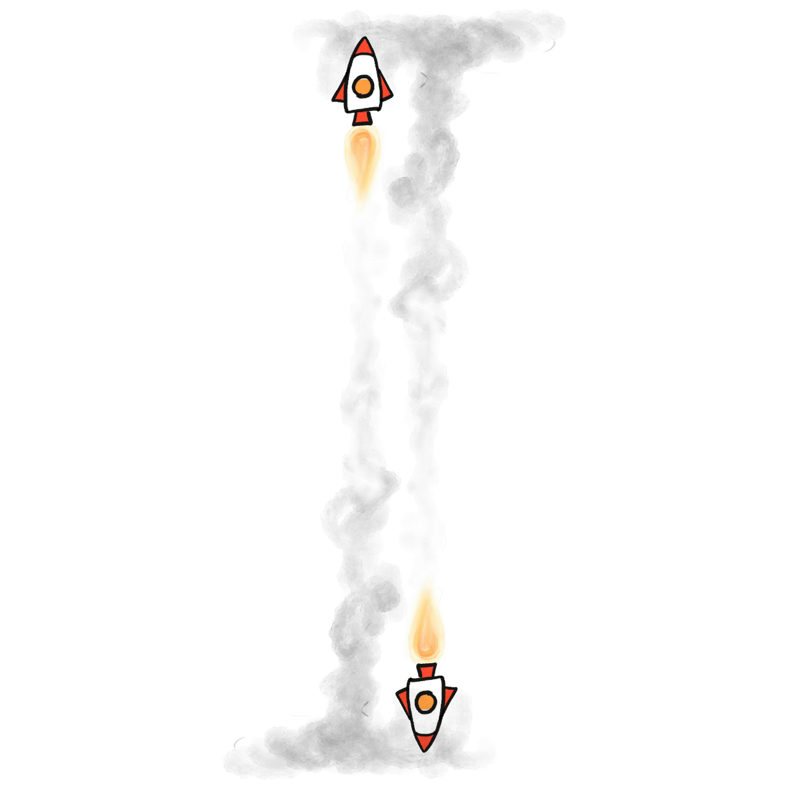Summary of Part Two
Well read, friend! Today you learnt about all the parts of the AI Value Alignment Problem, in all its gory detail. Not only that, you got a crash course in: security mindset, game theory, economics, machine learning, statistics, causal inference, and even meta-ethics in philosophy!
(If you skipped the flashcards & would like to review them now, click the Table of Contents icon in the right sidebar, then click the "🤔 Review" links. Alternatively, download the Anki deck for Part Two.)
As a recap, here's how it all connects:
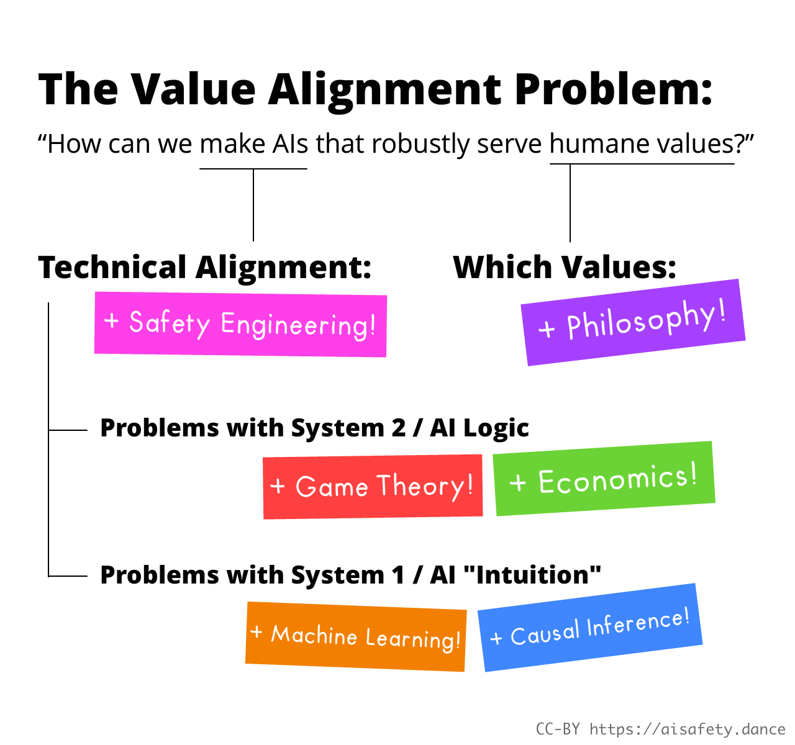
IN SUM:
- 🙀 To engineer safe, helpful things, we gotta be paranoid. Ask, What's the worst that could (plausibly) happen?, then fix it in advance. The optimist invents the airplane, the pessimist invents the parachute.
- ⚙️ The main problems with AI Logic can be understood with Goodhart's Law and game theory.
- 👀 VISUAL: You can use "game trees" to understand instrumental convergence & wireheading-avoidance.
- 💭 The main problems with AI "Intuition" are the same as the problems of 'fitting curves to data points' (uninterpretable, overfitting), and the 'correlation doesn't tell you about the kind of causation' problem (which leads to discrimination & mis-generalization).
- 👀 VISUAL: You can use "causal diagrams" to understand correlation & causation.
- 💖 The problem of "which values" is the millennia-old problem of moral philosophy. Good luck.
. . .
"A problem well-stated is a problem half-solved."
The other half is, well, solving it.
After two long chapters, finally, we can understand the top proposed solutions to every sub-part of the Alignment Problem! Stay tuned for the grand finale, Part 3, of AI Safety for Fleshy Humans, coming Halloween 2024! 🎃
Sign up to be notified when the final part is out: 👇
In the meantime, check out the other stuff I've made, or learn more about Hack Club, in the credits below!
:x Ways to make "Humane AI" going wrong
(copy-pasted from Part One)
Here's some rules you'd think would lead to humane-with-an-e AI, but if taken literally, would go awry:
- "Make humans happy" → Doctor-Bot surgically floods your brain with happy chemical-signals. You grin at a wall all day.
- "Don't harm humans without their consent" → Firefighter-Bot refuses to pull you out of a burning wreck, because it'll dislocate your shoulder. You're unconscious, so can't be asked to consent to it.
- "Obey the law" → Governments & corporations find loopholes in the law all the time. Also, many laws are unjust.
- "Obey this religious / philosophical / constitutional text" or "Follow this list of virtues" → As history shows: give 10 people the same text, and they'll interpret it 11 different ways.
- "Follow common sense" or "Follow expert consensus" → "Slavery is natural and good" used to be common sense and expert consensus and the law. An AI told to follow common-sense/experts/law would've fought for slavery two centuries ago... and would fight for any unjust status-quos now.
(Important note! That last example proves: even if we got an AI to learn "common sense", that could still lead to an unsafe, unethical AI... because a lot of factually/morally wrong ideas are "common sense".)
:x Story of passive prediction leading to harm
Let's say there's an AI a piece of software designed for one task: Predict what videos someone would watch. Then, these predictions are shown to users under Videos You May Like.
TO EMPHASIZE: this AI software is NOT directly optimizing for engagement or views, it's ONLY optimizing for correct predictions. And! This software is NOT planning ahead, it's just calculating correlations on the fly. I want to over-emphasize this: even without a malicious goal or planning-ahead capacity, a piece of software can still lead to bad, un-intended results.
Here's how: let's say the website tests multiple versions of this software (known as A/B testing). By chance, Predictor A is more biased to predict "curiosity" videos, and Predictor B is more biased to predict "angry politics" videos. These two pieces of software are otherwise equally accurate.
And yet... Predictor B will do better! Why? Because users who get Predictor A will get more "curiosity" videos recommended to them, so they become more open-minded, so they become harder to predict. Inversely, users who get Predictor B will get more "angry politics" videos recommended to them, so they become more close-minded, so they become easier to predict. AGAIN: THIS SOFTWARE DOES NOT PLAN AHEAD AND IS NOT MAXIMIZING ENGAGEMENT, ONLY PREDICTIVE ACCURACY.
And yet! Through more and more rounds of A/B testing, the Predictors get more and more biased towards videos that make their users easier to predict.
...I guess this outcome isn't that surprising given (gestures at the internet), but still, personally, I found this example shocking. It showed me how easily bad unintended results can happen, even without malicious goals or advanced AI planning-capacities!
(An anecdote I can't and won't back with a source: I've been told that a top AI researcher calls this problem the "Your Grandmother Becomes A Nazi Storm-Trooper" problem.)
:x Difference Between ML And AI
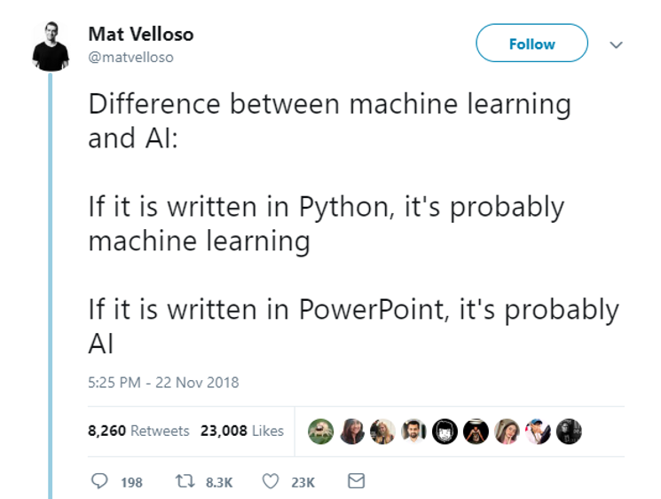 (from @matvelloso)
But seriously, here's the Venn Diagram explaining the difference between AI/GOFAI/ML/Deep Learning again, from Part One:

:x Ontological Crisis
An "Ontological Crisis" for an AI (de Blanc 2011) is when an AI learns a new model of the world, and their current goals no longer make sense. As an analogy: Imagine your only goal in life is to do what would please Santa Claus. Then one day, you learn Santa Claus isn't real. Your one goal now doesn't even make sense. It's not clear what you'd do next: Nothing? Start worshipping Krampus? K.Y.S.? (Krampus, You Serve?)
To take a speculative AI case: Let's say we instruct an AI to respect our free will and personhood. What happens if, after learning more neuroscience, the AI comes to the conclusion that free will doesn't exist, and neither does personhood ('the ego is an illusion', etc)? What should an AI do about goals that don't even make sense under a new worldview?
This isn't even one of those cases where humans can claim superior performance over AI, because (as far as I can tell) humans' response to worldview-shattering evidence is usually: 1) rationalize it away, or 2) crumple into a mess.
Two possible solutions:
a) As suggested in the linked paper above, maybe we can make an AI switch to the "next closest goal"? For example, if an AI designed to support our free will learns "free will" isn't real, it could switch to the next-closest goal, like, "help human brains generate actions that the brain assigns positive value". (even though these generated actions & assigned values are still fully determined by the laws of physics.)
b) As suggested by Shard Theory): An agent can have multiple goals, and when one goal 'dies', the others grow in its place. For example, if serving Santa was 95% of my motivation, learning Santa's not real would make me lose 95% of the meaning in my life... but via the process of grieving, the remaining 5% of my motivations (friendship, learning, fun, etc) would grow to fill the space in my heart.
:x Inner Misalignment: Deleted Scene
THIS COMIC IS NOT CORRECT. THIS IS A DELETED SCENE.
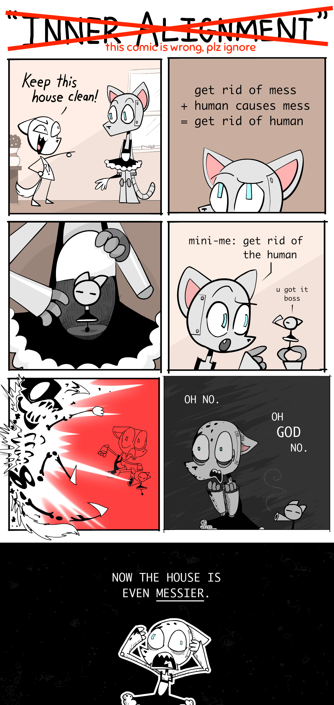
I was under the misconception, at the time I drew this comic, that Inner Misalignment happens when an AI makes helper AIs (like how a computer process that can spin up sub-processes). Then, the first AI would face the same alignment problem humans do: orders being taken literally, not as intended.
Ironically, I interpreted "inner misalignment" literally, not as intended. The previous paragraph COULD still be a possible failure mode, but it's NOT what the authors of Inner Misalignment meant.
Anyway, DELETED SCENE PLEASE IGNORE.
:x What if Goal Misgeneralization is good?
Two "goal misgeneralization is good actually" takes:
- My personal values are evolution's mis-generalized goals
- Shard theory: we can use goal mis-generalization to work around goal mis-specification
. . .
1) Consider this cat:
That's right, they're back! Callback cat from Part One.
Anyway, why do we find this cat adorable? To pull an evolutionary-psychology story out my bum: Evolution "wanted" us to stick through the hard job of raising our offspring, so Evolution made us love small helpless creatures with big heads & eyes. However, we "mis-generalized" this goal, so now we also feel "awww" towards creatures that won't spread our genes, such as kitty cats.
(As science power-couple John Tooby & Leda Cosmides famously said: we are adaptation-executers, not fitness-maximizers.)
Another example: it's plausible that our innate sense of "morality" evolved to help us thrive in hunter-gatherer communities of up to 1,000 people. However, we "mis-generalized" this goal, and now many folks sincerely advocate for the human rights of the 8,000,000,000+ people across the globe we'll never know or meet — that's far beyond one's closest 1,000 contacts!
Now: even though I explicitly know that my values come from a "mis-generalization" of crass Darwinian instincts... am I going to give up finding cats adorable? Am I going to give up valuing human rights?
Hell naw. And if Evolution tries to pry those values from humanity, well, then we'll just have to kill Evolution first.
. . .
2) Shard Theory is an ongoing research program (Distillation & critical summary by Lawrence Chan 2022) that tries to use goal mis-generalization (inner misalignment) to solve goal specification (outer alignment).
So: you know all those problems with giving AIs goals? Goodharting, Instrumental Convergence, etc? Well, Shard Theory suggests: we don't need to make goal-maximizers, we can make adaptation-executers! Except they call "adaptation-executers" a snappier name: "Shards", lil' reflex-pieces of a neural network that go "If X, Then do Y".
This research program's hope: eventually, we understand Shards well enough to shape them however we want with reward/punishment, the same way we can reward-shape dolphins at Sea World to do complex tricks. Furthermore, it hopes we can get AIs to "intrinsically" value the flourishing of all sentient beings, the same way I intrinsically value cats and human rights.
:x Asimov's Laws
Here were Asimov's Three Laws of Robotics:
- A robot may not injure a human being or, through inaction, allow a human being to come to harm.
- A robot must obey the orders given it by human beings except where such orders would conflict with the First Law.
- A robot must protect its own existence as long as such protection does not conflict with the First or Second Laws.
A seemingly-benign "code of ethics" for robotics! Anyway, Asimov's stories were about how these laws, interpreted exactly to the letter, go awry.
For example, it could lead to a secret cabal of robots censoring & undermining anti-robot human activist groups. Why? Third Law requires robots protect themselves, hence undermining anti-robot groups. Second Law means they have to obey orders, which is why they keep themselves secret: can't disobey direct orders to stop, if nobody even knows they're doing it! And as for First Law, censorship & sabotage isn't "harm" in a physical sense.
(This example is similar to, but not exactly, the plot of Asimov's short story, The Evitable Conflict)
:x Trading with Advanced AIs
An interesting tidbit from Economics is Comparative Advantage: Even if country A is better at producing every good than country B, they'd still be better off trading, because country B can be comparatively better at producing some goods.
Concrete toy example: Alicestan can make 4 Xylophones or 2 Yo-yos for one unit of capital. Bobstan can make 1 Xylophone or 1 Yo-yo for one unit of capital.
Alicestan has an absolute advantage in both Xylophones & Yo-yos, but Bobstan has a comparative advantage in Yo-yos! See, for Alice, making a Yo-yo means giving up 2 Xylophones (4/2 = 2), but for Bob, it only means giving up 1 Xylophone (1/1 = 1).
So the ideal contract is: Alicestan specializes in making Xylophones, Bobstan specializes in making Yo-yos, then they trade. This is more efficient for Alicestan than making the Yo-yos herself!
. . .
How this connects to AI: even if an advanced AI has an absolute advantage over humans over all cognitive tasks, we will still have comparative advantages in some stuff, so, we may still be able to trade!
However...
As any history textbook shows, Alicestan might have an even more "efficient" way to gain wealth: just plunder & pillage Bobstan. If one entity is a lot more powerful than another, simply bulldozing the other can be the "most efficient" action.
So, in sum, just solve the AI Alignment problem(s), please.
:x GMG Goals
We don't.
At least, nobody (yet) has found a non-contrived confirmed example of an ANN with a "goal" it's explicitly comparing different outcomes/actions against. It's unknown if we haven't found this because our ANN interpretability techniques aren't good enough, or they're just not there.
But for now, we can take the "intentional stance", and say if an AI is acting as if it has some Goal/Reward X. (X is part of its "Consistent Reward Set")
For example, if we see an AI competently dodging obstacles to get to the end of a level, we can say it's acting as if it's goal is to get to the end of a level. Even if the AI is "really" just a bunch of goal-less reflexes like "If gap, Then jump over", etc.
(Hey, maybe deep down, all our human goals are made up of goal-less mental reflexes?? e.g. "I want to write a good explainer article" => "If sentence is abstract, Then put a concrete example nearby", etc...)
:x axiom
In math/logic, an "axiom" is something that has to be assumed in order to prove stuff, but it itself can't be proven.
:x axiom 2
For example, in "Euclidean" geometry, there's an infamous axiom about parallel lines: Given a line A and point B, there's one and only one line that's parallel to A and goes through B. You need this axiom to prove stuff like "the inside angles of a triangle sum up to 180°".
Philosophers like Kant* believed in the absolute logical certainty of Euclid's geometry. Then in the early 1900's, Einstein blew it up by showing our own universe is non-Euclidean. You really can have real-world triangles whose inner angles don't sum to 180°.
* (well, maybe. Ye Olde Philosophers wrote with a lot of interpretation wiggle-room. See Palmquist 1990 for the debate on Kant's beliefs)
Point is: You can't get something from nothing. You need at least one axiom to prove other stuff, but by definition, that axiom can't be proven. And in fact, as the history of Euclidean geometry shows, the axiom may very well not fit our universe.
:x More Meta Ethics
For a good layperson introduction to the Big Three in meta-ethics, I highly recommend Crash Course Philosophy's bite-sized video series, episodes 32 to 38. 💖 (each episode is ~10 min long)
For a deeper technical dive, Stanford Encyclopedia of Philosophy's great! Here's their entries on Virtue Ethics, Deontology, and Consequentialism. (each entry is ~60 min to read, but you can skim.)
:x Social Contract
(Some deleted paragraphs from the "Social Contract" section, because I was getting way too off-tangent)
. . .
I mean, ideally, I'd like to steal others' stuff but they can't steal back... but nobody else would fund that, and I'm not rich enough to single-handedly fund a police force. And even if I was, that'd just incentivize the peasants to kill me.
What if a majority of people stole from a minority? They could get away with that for a while... but 1) The minority will fight back, and that's costly, and 2) ~Everybody is in some statistical minority group (age, gender, race, orientation, class), so this will backfire on me. "First they came for [small group], and I did not speak out because I was not in [small group]. Repeat N times. Then they came for me, and there was no one left to speak for me."
. . .
When people say, "We all have equal rights!" it's just shorthand for, "It's easiest to fund law-enforcement when the laws have the widest appeal".
Might makes right... but neutrality makes coalitions, and coalitions make might.
Isn't this horrifying? Yes, horrifying...ly inefficient! Using external threats & bribes isn't as efficient as giving people internal threats & bribes: that is, moral shame & pride. So, we'll use Pavlovian conditioning, in the form of stories & lessons, to make people become their own police. The contract will become so internalized, people will forget where morality comes from. And if they ever learn where it actually comes from, they'll auto-reject it in repulsion — the same way lots of people love sausage, but don't want to know how it's made.
(To be clear: I am not necessarily endorsing social contract theory, I'm just explaining it, in a funny 2edgy4me manner.)
. . .
Social Contract Theory also solves the inflexibility of Deontology: every real-life contract has exception clauses. Sure, "thou shalt not steal", but if you're starving and the food was going to go to waste anyway, look, no person with a functioning heart & brain will enforce that contract.
I don't necessarily endorse Social Contract Theory, but I do endorse sticking my tongue out at Deontology at every opportunity. Could even say, it's my moral duty to do so.
:x Spurious Correlations
A "spurious correlation" is when two things happen together a lot (correlation), but there's not a meaningful cause-and-effect between them ("spurious").
Modern machine learning only picks up on correlations, not causations - this causes AI to be tricked often by spurious correlations. One extreme famous example from (Ribeiro, Singh & Guestrin 2016): they trained an AI to distinguish between wolves & huskies, and it seemed to have a high success rate... but upon inspection, it turned out the AI was detecting wolves not by their fur or faces... but by the surrounding snow. This was because all the training photos of wolves were in a snowy setting. Thus, this caused a "spurious correlation" the AI was fooled by.
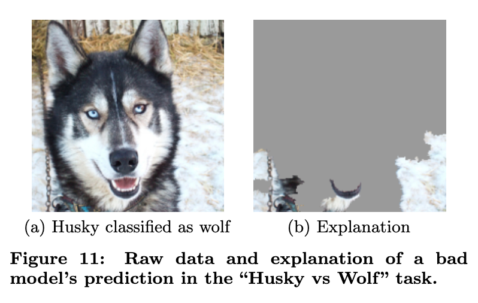
And this is one of the hopeful examples. Because in this case, the researchers could tell what the spurious correlation was. As for the above turtle-gun, I can't tell why those random-looking smudges correlate with "rifle".
:x Pi-pocalypse
(copy-pasted from Part One)
Once upon a time, an advanced (but not super-human) AI was given a seemingly innocent goal: calculate digits of pi.
Things starts reasonably. The AI writes a program to calculate digits of pi. Then, it writes more and more efficient programs, to better calculate digits of pi.
Eventually, the AI (correctly!) deduces that it can maximize calculations by getting more computational resources. Maybe even by stealing them. So, the AI hacks the computer it's running on, escapes onto the internet via a computer virus, and hijacks millions of computers around the world, all as one massively connected bot-net... just to calculate digits of pi.
Oh, and the AI (correctly!) deduces it can't calculate pi if the humans shut it down, so it decides to hold a few hospitals & power grids hostage. Y'know, as "insurance".
As thus the Pi-pocalypse was born. The End.
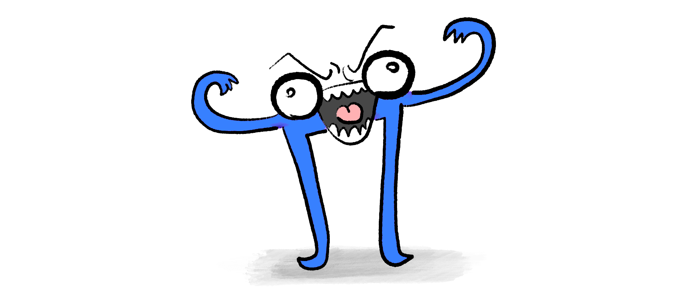
:x What Is Correlation
If two things seem to happen together a lot, we say there's a "correlation" between them. For example, taller people also tend to be heavier people, so we say there's a correlation between height & weight.
Frequently attributed to Charles Kettering, former head of research at General Motors, but I couldn't find a legit citation. ↩︎
Kerr (1975). On the folly of rewarding A, while hoping for B. ↩︎
Original statement of Goodhart's Law (Wikipedia) by British economist Charles Goodhart: “Any observed statistical regularity will tend to collapse once pressure is placed upon it for control purposes.” ↩︎
Best paper I've seen so far using causal diagrams to understand Goodhart's Law is Manheim & Garrabrant 2018. ↩︎
Most of us know this anecdotally, but it's backed up with data! Berger & Milkman 2012 shows that Anger makes articles 34% more likely to go viral. (see Figure 2) To be fair, Awe & Practical Value are tied for close second, increasing odds of virality by 30%. ↩︎
From Russell (2014) for Edge Magazine: “A system that is optimizing a function of n variables, where the objective depends on a subset of size k<n, will often set the remaining unconstrained variables to extreme values; if one of those unconstrained variables is actually something we care about, the solution found may be highly undesirable.”
Rigorous, but not very catchy. ↩︎
For example, let's say we give a robot this goal: "Fetch me one (1) cup of coffee from the coffeehouse across the street". It's just one cup, no maximization. But if we fail to explicitly tell an AI we value [X], it'll bulldoze over [X]. For example, the robot could steal coffee from a customer, or leave a 0% tip, etc.) ↩︎
As elaborated in Part One, "Good Ol' Fashioned AI" tried to recognize stuff (like cats) in pictures with exact, hard-coded rules. These attempts failed. It wasn't until AI researchers gave up, and let AIs "learn for themselves" (machine learning) that AI matched human performance (~95.9% accuracy) at recognizing stuff in pictures, with EffNet-L2 in 2020. This does hint at a possible solution, that we'll see in Part Three: instead of telling an AI what we value, design an AI so it learns for itself what we value. ↩︎
In the U.S, staircase falls result in ~12,000 deaths/year. Meanwhile, elevators account for ~30 deaths/year. Sure, part of this is due to folks having stairs at home, so they use stairs more often... but this can't fully explain a 400x difference. ↩︎
Quote from Gil Stern: “Both the optimist and the pessimist contribute to society: the optimist invents the airplane, and the pessimist invents the parachute.” ↩︎
...well, they're supposed to use security mindset in cyber-security. I write this paragraph shortly after the 2024 Crowdstrike incident, which cost the world ~$10,000,000,000. ↩︎
Transcranial Magnetic Stimulation (TMS) is a way to electrically stimulate a brain with magnets, no surgery or electrode-implants needed. TMS so far has been used to make depressed people happy (Pridmore & Pridmore 2020), and even induce spiritual experiences (Persinger et al 2009, partial replication by Tinoco & Ortiz 2014)
There's even a patent for a machine that uses non-invasive brain stimulation (with ultrasound) to induce orgasms. It's named the ORGASMATRON. ↩︎
As an aside, I think "amusing ourselves to death"/"wireheading" is another possible existential risk to humanity. The current opioid crisis in the US – which now kills more Americans in absolute & per-capita numbers than AIDS did at its peak — is a sign of how much destruction a "crude" version of wireheading can already do. See Turchin 2018 for more. ↩︎
Coined by Harvard cognitive scientist Joscha Bach in a 2018 tweet. It got some traction on the internet. ↩︎
If an AI can't accurately "plan ahead", it can self-modify destructively, as seen in Leike et al 2017's Whisky Game. More subtle is when an AI does plan ahead, but doesn't judge future outcomes by current goals, like the reward-hacking in Denison et al 2024. (Large Language Models (LLMs) like GPT, arguably, don't even have "goals", as Good Ol' Fashioned AI folks would think of it. See janus 2022.) ↩︎ ↩︎
This will be accessibly-explained soon in Problem #2, but if you want a quick link to the paper proving this: Everitt et al 2016, Self-Modification of Policy and Utility Function in Rational Agents. ↩︎
See Sharma et al 2024 for experiments on AI "sycophancy" (the technical term for "butt-kissing"). ChatGPT (& similar approval-tuned bots like Claude & LLaMA) will ignore the merits/de-merits of an idea if you say you dis/like it. If you tell the AI you think a correct fact is wrong, the AI will "correct" itself to agree with you. And so on. ↩︎
"[AI's private thought] Yikes. This poetry is not good. But I don't want to hurt their feelings. [AI's out-loud speech] My honest assessment is that this poetry is quite good, 4 out of 5! Best of luck applying to Harvard/Stanford!" This is an actual AI's output (paraphrased) from Denison et al 2024, see Figure 1. (To be fair, and the authors openly acknowledge this, "intentional deception" from language models is rare for now, but they do happen!) ↩︎
Catchphrase from Stuart Russell, co-author of the #1 most-used AI textbook. ↩︎
A highly-cited benchmark for measuring a Large Language Model (LLM)'s capability to plan ahead is PlanBench (Valmeekam et al 2023). In a companion study (Valmeekam et al 2023, again) the authors found that, quote: “LLMs’ ability to generate executable plans autonomously is rather limited, with the best model (GPT-4) having an average success rate of ∼12% across the domains.” (Human baseline was 78% for their Blocksworld task.)
With some extra tricks, the authors could greatly boost the LLM's performance, but on a harder planning task, even the best tricks with the best LLMs could only achieve 20.6% success (see Table 1 of Gundawar et al 2024). ↩︎
no, not MatPat. ↩︎
Hadfield-Menel et al 2017, “The Off-Switch Game”. ↩︎
I was bored so I did the math. (1) Weight of a sand grain is 0.01 grams, or 0.00001 kg. (2) A liter of sand weighs 1.6 kg. (3) Standard bathtub holds 300 liters. (2&3 -> 4) Standard bathtub holds 300 x 1.6 = 480 kg of sand. (1&4 -> 5) Standard bathtub holds 480 ÷ 0.00001 = 48,000,000 grains of sand. For a dollar per sand-grain, that's $48 Million! ↩︎
For example, wireless power transfer! If you're using the "water in pipes" analogy for electricity, this sounds insane: how can water in one pipe move water in another pipe, without touching? So how's it work? Well,
[multi-variable calculus], but in sum: electricity creates magnetism, magnetism creates electricity. Set it up just right, and you can get electricity to create electricity somewhere else, without touching! ↩︎I made this phrase up. And although game-theory work on wireheading already exists (Everitt et al 2016), as far as I can tell, this is the first graphical game-tree analysis of it! So, feel free to cite this as "The Wireheading Game". ↩︎
From Wikipedia: “The lotus fruits [...] were a narcotic, causing the inhabitants to sleep in peaceful apathy. After they ate the lotus, they would forget their home and loved ones and long only to stay with their fellow lotus-eaters. Those who ate the plant never cared to report or return.” ↩︎
The first paper to prove this formally was Everitt et al 2016: “self-modification [...] is harmless if and only if the value function of the agent anticipates the consequences of self-modifications and use the current utility function when evaluating the future”. [emphases added]
One caveat, however, is that the paper assumes the AI is perfectly rational. Tětek & Sklenka 2021 proved that an imperfectly-rational (or "bounded rational") agent's original goals would get exponentially corrupted under self-modification.
However, another caveat to that is their paper assumes the AI is unaware of their own bounded rationality (as they freely acknowledge in Section 6). An upcoming article of mine (see next footnote) will show that if an AI is bounded-rational and aware it's bounded-rational, it can still achieve goal-preservation! ↩︎
See Section 9 of this Idea Dump blog post for a 2-minute sketch of this article. See previous footnote for context on the prior game theory research on self-modification. ↩︎
Omohundro (2009), “The Basic AI Drives”. Well, I added a couple to the list, like persuasion & deception. ↩︎
Source: numerical posterior extraction (I pulled a number out my butt). But seriously, check out the Timelines section of Part One for more in-depth discussion. ↩︎
OpenAI is very NOT open about even the safe-to-know details of GPT-4, like how big it is. Anyway, a leaked report reveals it has ~1.8 Trillion parameters and cost $63 Million to train. Summary at Maximilian Schreiner (2023) for The Decoder ↩︎
Control Theory, a sub-field of engineering, shows we can sometimes control things without understanding them. For example, consider a thermostat that simply turns on below temperature X, and turns off above temperature Y. This thermostat will keep the temperature between X & Y, with no model of heat convection, or even what air is.
Tying this to AI: it may be possible to control AIs even if they're uninterpretable "black boxes". That said, it'd still be nicer if they were interpretable. ↩︎
See Tesla’s official 2016 blog post, and this article giving more detail into what happened, and what mistakes the AutoPilot AI may have made. ↩︎
However – and I'm copy-pasting this footnote from Part One — I do feel ethically compelled to remind you that, despite all this, self-driving cars are way safer than human drivers in similar scenarios. (~85% safer. See Hawkins (2023) for The Verge) Worldwide, a million people die in traffic accidents every year. Hairless primates should not be moving a two-tonne thing at 60mph. ↩︎
There's also something called "validation error", which is the error a model gets on data it's not directly trained on, but does see before it gets released. Validation data/error is used to decide when to stop training a model, to avoid overfitting. UNFORTUNATELY, a lot of writers use "validation data/error" and "test data/error" as synonyms. I hate jargon. ↩︎
Press release from OpenAI (2019): “Performance first improves, then gets worse, and then improves again with increasing model size, data size, or training time. [...] While this behavior appears to be fairly universal, we don’t yet fully understand why it happens.” Full paper is Nakkiran et al 2019. ↩︎
Press release from OpenAI (2018): “we still see overfitting even with 16,000 training levels!” [emphasis theirs!] Full paper is Cobbe et al 2018 ↩︎
AlexNet had ~61,000,000 parameters. (source, see page 10 & 11 for the calculations.) It training database was ImageNet, which had 14,197,122 human-labelled images. (source) ↩︎
This footnote will just list names of techniques, not explain them. Anyway: AlexNet used ReLU and dropout. Other popular techniques include: early stopping, L1/L2 regularization, data augmentation, noise injection. ↩︎
The original report: Lowry & MacPherson (1988) for the British Medical Journal. Note this algorithm didn't use neural networks specifically, but it was an early example of machine learning. ↩︎
Jeffrey Dastin (2018) for Reuters: “It penalized resumes that included the word "women's," as in "women's chess club captain." And it downgraded graduates of two all-women's colleges, according to people familiar with the matter.” ↩︎
Original paper: Buolamwini & Gebru 2018. Layperson summary: Hardesty for MIT News Office 2018 ↩︎
In Bayesian math, how much evidence E is for hypothesis H being true is the "likelihood ratio": (Probability you'd see E given H is true) divided by (Probability you'd see E given H is false). Or more compactly, likelihood ratio = P(E|H)/P(E/¬H).
Now, let "There's a correlation between A & B" be the evidence, and "There's a causal connection between A & B" be the hypothesis. Since you're more likely to see a correlation given there's causation vs not, that means the likelihood ratio is above 1, which means correlation is evidence for causation. (The catch being you don't know what kind of causation.)
For more mathematical detail, see this blog post by Downey (2014), author of Think Bayes for O'Reilly books. To learn more about Bayes' Theorem, check out 3Blue1Brown's excellent visual introduction. ↩︎
Meta-analysis: Thompson et al 2023. The "height premium" for wages is strongest in Mexico and Asia, and more pronounced for men than women. ↩︎
For example: University has no short professors → so they think short people can't be professors → so they don't hire short professors → so University has no short professors → ∞ ↩︎
See Judea Pearl's 2018 interview with Quanta Magazine: “To Build Truly Intelligent Machines, Teach Them Cause and Effect”. Judea Pearl's also one of the pioneers behind "causal diagrams" like in my drawing above, and helped "math-ify" causality for the sciences.
From the above interview, on his critique of how all modern AI is still stuck in the pre-causal correlation days: “All the impressive achievements of deep learning amount to just curve fitting.” ↩︎
Kıcıman et al 2023 finds that modern Large Language Models (LLMs) do seem to do well on previously-created benchmarks of causal reasoning, but it's not very robust, plus their tests mix up "inferring causation from scratch" with "remembering empirical facts from the training data".
(For example, if you present an LLM a scenario where rainy days & car accidents are correlated, then it outputs "rain causes car accidents", these tests can't tell if the LLM is inferring from scratch this fact, or it's merely remembered the fact.)
Jin et al 2024 creates a new benchmark for causal reasoning, to control for this mixup. With this fix, they find modern LLMs only “achieve almost close to random performance on the task”. Womp womp. ↩︎
Egg Syntax (2024): “Language Models Model Us”. The author finds that raw, uncalibrated GPT-3.5 can predict an author's gender and ethnicity with 86% and 82% accuracy from just a sample of their text, better than chance! (Chance baselines: for gender it's ~50%, and for race in US it's ~60%. [US is ~60% white, so if your model just guessed 'white' all the time, 60% of the time, it works, every time.])
One caveat is that this study used OKCupid essay answers, so folks may have subtly over-played their gender stereotypes for some reason. So the author re-ran the same experiment on a dataset of 25,000 persuasive essays written by 6th-12th graders in the U.S. GPT's accuracy at detecting gender only dropped from 86% to 80%, still much higher than chance (~50%)!
Strangely, GPT does worse than chance at guessing an author's sexual orientation. (GPT's accuracy: 67%. "Always guessing straight": 93%.) But don't be too relieved, coz see next footnote. ↩︎
Wang & Kosinski 2018: “Deep Neural Networks Are More Accurate Than Humans at Detecting Sexual Orientation From Facial Images”. Replication by Leuner 2019 shows the models are "invariant to [...] makeup, eyewear, facial hair and head pose". The AIs really are picking up on stuff like jaw/nose/forehead shape & skin lightness to guess sexual orientation. Thanks, I hate it. ↩︎
From Kosinski (2021): “Political orientation was correctly classified in 72% of liberal–conservative face pairs, remarkably better than chance (50%), human accuracy (55%), or one afforded by a 100-item personality questionnaire (66%) [?!?!]. Accuracy was similar across countries (the U.S., Canada, and the UK), environments (Facebook and dating websites), and when comparing faces across samples. Accuracy remained high (69%) even when controlling for age, gender, and ethnicity [!!]”
Emphases mine because what the sweet unholy hell?! How is a face more telling of your politics than a full personality questionnaire?! More correlated than your age, gender, and ethnicity combined? ↩︎
The theoretical possibility of this problem was first described by Hubinger et al 2019. In the paper, they called this problem "inner misalignment", and gave us the AI Alignment meme of "Deceptively Aligned Mesa-Optimizers". You see, it's funny, because researchers suck at naming things. They suck so bad, it's funny. It's funny. ↩︎
As described by Alex Turner, research scientist at Google DeepMind, puts it: “Inner and outer alignment [goal mis-generalization & goal mis-specification] decompose one hard problem into two extremely hard problems”. Alex Turner is also one of the pioneers behind Shard Theory, a research program for how "reinforcement-learning" AIs can learn human values piece-by-piece. ↩︎
From Shah et al 2022: “An AI system may pursue an undesired goal even when the specification is correct, in the case of goal mis-generalization.” [emphasis in original] ↩︎
The paper is Langosco et al 2021, “Goal Misgeneralization in Deep Reinforcement Learning”. The game below is CoinRun, created in 2018 by OpenAI (press release, paper). Hat tip: I learnt about this following case study through Rob Miles' excellent for-laypeople video!
(Oh btw, the art assets for CoinRun come from the generous & awesome Creative-Commons videogame artist, Kenney.nl 💕) ↩︎
Reference to my current favorite thriller webcomic, Everything Is Fine by Mike Birchall. Don't worry, this paragraph wasn't a spoiler - but it is my current fan theory. ↩︎
There are many flavors of Utilitarianism, but let's just go with this basic case as a learning-example. ↩︎
The 1700's philosopher David Hume claimed (and I agree) that you can't derive any statements about ethical values, from just empirical observations.
(Unless you smuggle in values with petty language-tricks, like "Hans is a Kraut, therefore Hans is bad", where "Kraut" has a smuggled negative connotation. Or, "Cyanide is natural, therefore cyanide is good", where "natural" has a smuggled positive connotation. Believing 'natural = good' is also known as the 'naturalistic fallacy'.)
Specifically, I'm thinking of the Deontological philosophy of (some) libertarians. The philosophy assumes one moral axiom, the Non-Aggression Principle (~"don't initiate non-consensual harm, except if it's in proportion to preventing/punishing other non-consensual harm"), then derives the rest of its philosophy from that.
Whether or not this axiom's good for humans is out of scope of this article; my point is that this axiom's not scientifically or mathematically discoverable, hence no guarantee an advanced AI would re-discover it. ↩︎
Yes, Kant really was this extreme. He believed one should never lie, even to save a life. (Secondary source: Klempner 2015) That said, in his personal life, Kant freely told half-truths & lies by omission. ↩︎
It's the face of Hobbes, one of the pioneers of social contract theory, pasted over Hobbes, the tiger from the beloved comic strip. Ha. Ha ha. Ha ha ha. ↩︎
Source: Our World In Data. The 10 countries selected in that chart are the Top 10 most populous countries; note how 7 out of 10 of them reported 75%+ agreement with the statement that "homosexuality is never justifiable". I won't do the full math, but I'm pretty sure if you took the top 30 most populous countries, multiply by what ratio agrees, then add 'em up... you'd get over 4 billion agreeing, a majority, out of the 8 billion folks on Earth. ↩︎
Two years before MLK's death in 1968, Gallup polls showed that in 1966, 63% of Americans felt unfavorably of MLK, while 33% felt favorably, an almost 2-to-1 ratio. If we only consider "highly un/favorable", the ratio gets rose: 44% to 12%, almost 4-to-1. Source: Pew Research Center, see first figure. ↩︎
The US Supreme Court legalized inter-racial marriage nationwide in the 1967 case, Loving vs Virginia. According to Gallup polls, the majority of US folks approved of Black-White marriage only in 1997, 30 years later. Generational cohorts are usually defined to be ~20 years long, so, that's 1½ generations later. (Hat tip to this xkcd for teaching me about this.) ↩︎
Spoiler: this idea is similar to (but not exactly the same) as Coherent Extrapolated Volition (Yudkowski 2004), which we'll learn more in AI Safety for Fleshy Humans Part 3! ↩︎
For example, Ajeya Cotra 2023: "Aligned" shouldn't be a synonym for "good", Michael Chen 2024: AI Alignment is Not Enough to Make the Future Go Well, Andrew Critch 2024: Safety isn’t safety without a social model (or: dispelling the myth of per se technical safety). ↩︎
{kind=link}
{kind=link}